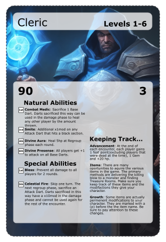
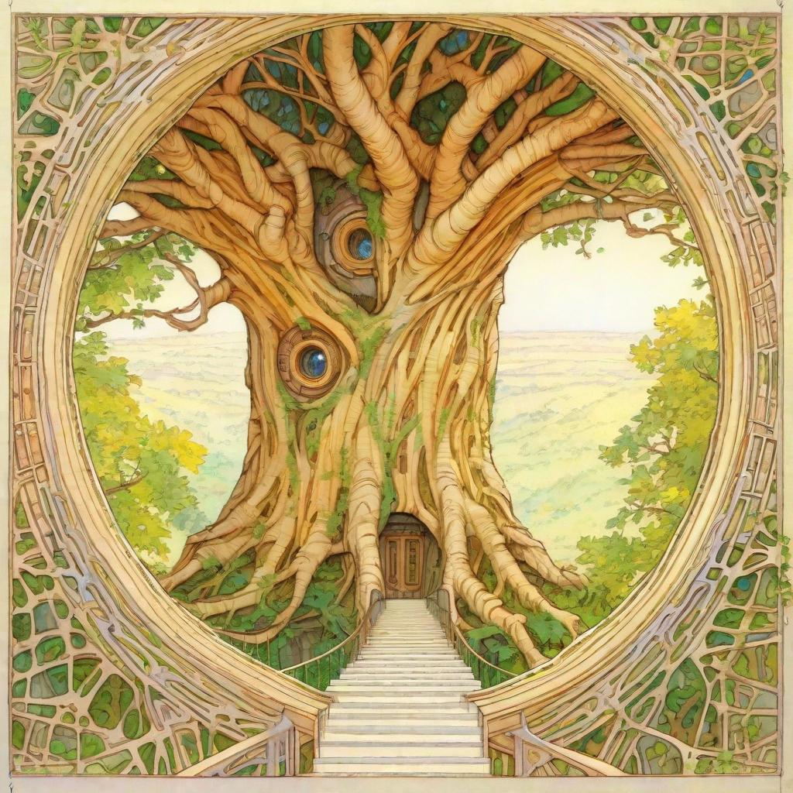

Created Thursday 12 October 2023
@home @index
Our Epic Journey: Crafting a Unique Game
This incredible adventure began with just "two guys and a dartboard." We set out to transform the traditional dart game Cricket into a collaborative and imaginative version, infusing it with the spirit of Dungeons and Dragons. The core idea was simple yet groundbreaking: instead of competing individually, we made it collaborative, turning every number into an epic battle with its own hit points.
In this new version, the players collectively focus on a single number, aiming to "deplete" its hit points. Picture it like this: you're facing an enemy with Armor Class 16 (akin to hitting a 16 on the board), and your success in this hit can vary from x1 (hitting the number) to x2 (hitting the double) or x3 (triple) and even x4 (single bullseye) and x5 (double bullseye). Then, we introduced the concept of dealing damage to these foes.
For instance, with your 3 base darts, you might throw a 16, a 4, and then a single bullseye. These are followed by damage darts that deal varying amounts of damage. Let's say you throw a 7 (x1) and then a 16 (x4). The result? A whopping 71 points of damage inflicted on that enemy.
Our journey didn't stop at combat. We all love a good treasure hunt, and thus, we introduced treasures into the game, each one waiting to be uncovered and claimed. And here we stand today, deeply immersed in crafting powerful items and weaving captivating stories behind them.
We relish in creating adventures that you'd want to replay with your friends again and again. It's the joy of building these intricate worlds, featuring awe-inspiring monsters and enthralling narratives that can span years. Join us on a quest filled with powerful magical items, legendary beasts to battle, and stories to partake in. Our journey has only just begun, and we invite you to become a part of it.
<<< Project Notes | Contributions | Goals | Dailys >>
Understanding the Game
Interpereting the Cards
Initial Release Card Data
2023.v1.3alpha
- All Items
- All Enemies
- All Merchants
- All Activities
- All Encounters
- All Side Quests
- All Class Abilities
- All Enemy Abilities
- All Terminology
Created Saturday 14 October 2023
josh:
nearby slices as attack regions(depreciated for Numerical model, developing for PVP)
new armor class model for players
inside first(easier), then ouside sections of the board for difficulty calculations
...
Created Saturday 14 October 2023
Major Milestones
- Complete First Adventure
- Complete Towns
- Complete Encounters
- Complete Treasures
- Complete Handbook
- Complete Understanding
- Complete Interpreting
- Complete Rule Base
- Complete Step by Step
- Complete Advanced Rules
Created Thursday 12 October 2023
@rules @index
!!IMPORTANT!!
!!MORE FUN!!
Game Involvement
Begin with "First Steps," where you'll learn how to set up the game and understand card mechanics. As "The Adventure Begins," you'll explore interconnected "Adventures" and face challenging "Encounters" to level up. Advancing the campaign involves conquering non-encounter "Activities," enhancing your character through interactions with "Merchants," and utilizing "Portals" for seamless travel.
Getting Started:
First Steps: Learn how to begin your game journey, from setting up the game to taking your first actions.
Interpereting the Cards: Dive into the details of card interactions and gameplay mechanics as you embark on your adventure.
The Adventure Begins:
Understanding Adventures: Explore a collection of interconnected encounters that make up your character's epic journey.
Understanding Encounters: Immerse yourself in sets of activities and face formidable enemies to gain experience and level up.
Advancing the Campaign:
Understanding Towns: Explore dynamic hubs that house crucial services and opportunities. Engage with characters, access vendors, and embark on hidden quests to evolve your character and acquire resources. Towns also serve as gateways to seamless portal travel, ensuring a dynamic campaign.
Understanding Activities: Conquer non-encounter dart challenges that test your skills and strategic thinking.
Understanding Merchants: Acquire goods and services from various vendors to enhance your character's abilities and resources.
Understanding Portals: Discover the integral role of portals in your travel and campaign progress, enabling you to move between different locations and challenges seamlessly.
Game Progression:
Regroup: Understand the stage that occurs before anyone's turn, where essential decisions and preparations are made.
Turns: Explore the mechanics of the complete Turn, which collectively form the building blocks of the game.
Rounds: Dive into the concept of rounds, that are all brought together to make turns, shaping the overall flow of gameplay.
Stages: Learn about the key components of turns and rounds. including the player round (Regroup, Attack, and Damage) and the enemy round (Minion Damage and Enemy Damage).
Understanding Leveling: Discover how your character advances through the game. After defeating each Primary Enemy, your player increases one level and has the potential to gain additional hit points, abilities, and treasure.
Understanding Treasures: Explore the realm of wealth and artifacts, discovering how to acquire and utilize treasures in Astralor. Unlock their hidden potential to enhance your character's abilities and resources as you progress in the game.
Understanding Traveling: Explore when and how you can navigate the world of Astralor using Portals and Tunnels, allowing for strategic movement.
Tracking Progress: Learn how to effectively keep track of the changes and developments in your character as you progress through the game. This menu provides a comprehensive and structured approach to understanding the various stages and mechanics of game progression.
Dart Types
Base Darts (Resource for Strategy): Discover the fundamental currency of your gameplay - the Base Darts. These darts determine your starting resources and are recovered during the Regroup Stage, allowing you to carefully plan and strategize your every move.
Attack Darts (Unleash Your Offense): Witness the transformation of a Base Dart into a mighty Attack Dart during the Attack Stage. These darts are your weapon of choice as you unleash your offensive prowess and aim to overcome enemies and challenges.
Damage Darts (Turn Success into Impact): When an Attack Dart successfully hits its target, it metamorphoses into a Damage Dart, transforming your successful hits into potent blows. These darts amplify your impact, dealing substantial damage to your adversaries and paving the way to victory.
Abilities
Player Natural Ability (Innate Power): Unearth the unique innate powers possessed by player characters. These natural abilities are always at your disposal, enhancing your character's capabilities and allowing you to leave your mark on the world of Astralor.
Player Special Ability (Unique Techniques): Explore the realm of unique and specialized techniques available to players. These special abilities enable you to perform extraordinary feats, shaping your strategy and providing a distinct advantage in critical moments.
Enemy Natural Ability (Inherent Strengths): Delve into the world of formidable foes and their inherent strengths. Enemy Natural Abilities challenge players and add depth to encounters, ensuring that every battle in Astralor presents a unique and engaging test of your skills.
Enemy Triggered Ability (Adaptive Threats): Face adaptive and cunning adversaries with Triggered Abilities. These enemies respond to specific conditions or events, presenting an ever-evolving challenge and requiring players to stay on their toes to emerge victorious.
Special States
Bounced Dart (Erratic Rebound): Witness the unpredictability as your dart strikes a wire and then bounces to the ground, akin to the unpredictability of rolling a 1 in some scenarios. It's an unexpected twist that keeps the game exciting and challenges your strategic thinking.
Stick and Fall (Fleeting Victory, Frustrating Defeat): Experience a moment of triumph as your dart makes contact with the dartboard, only to stick for a mere instant before tumbling to the ground. While it technically hits, it doesn't always count, creating scenarios where success can be fleeting and frustration may creep in.
Off Board (Aim Astray, Catastrophe Looms): Feel the tension as your dart misses the dartboard entirely. Off Board throws can spell disaster in certain circumstances, reminding you that precision is paramount and that sometimes, the cost of missing can be high in the game.
xMods
Status Effects
Player Status Effects
Enemy Status Effects
Environment Status Effects
Real World Status Effects
Created Thursday 12 October 2023
@rules @safety
(Direct from) https://www.safesport.co.uk/DartsSafety.html
Children
- Very young children should never be allowed to play with darts. Darts can cause serious injuries to a toddler if they poke themselves in the eye.
- Older children should be supervised at all times when playing the game.
- It's a good idea to buy youngsters a set of soft tipped darts and board. The board is made of plastic and has small holes cast into it. The soft tip darts stick to the board in the small holes. This type of dart is a lot safer than metal tipped ones and are less likely to cause an injury if they strike anyone. .
- Never leave flights lying around as a toddler can put them in their mouth and choke on them.
- Keep your darts somewhere that is out of reach of small children.
Dart Safety
- Never set up your dartboard on the back of a door. Anyone who is not aware that you are playing could easily be struck if they opened the door.
- Make sure the dartboard is securely fitted to the wall. There have been cases when small children, and some adults, have suffered head injuries when a dart board has fallen on them. Darts also rebound more easily if the board is not secured.
- Never point, or throw a dart at anyone.
- Don't stand near a dartboard when someone is throwing. A dart might rebound and hit you.
- Don't walk in front of a dartboard when people are playing.
- Make sure the dartboard is set up well away from any busy areas, or anywhere people might be passing.
- If watching or playing always stand behind the player.
- Make sure anything that is breakable is moved away from the surrounding area. Darts have a habit of rebounding at some strange angles.
Created Thursday 12 October 2023
@rules @safety @basics
https://gldproducts.com/pages/how-to-hang-a-dartboard
(Direct from)
- Begin by marking off the proper height from the floor on your wall (5’8” or 1.73m). The bottom of the u-shaped channel should be at this height.
- Apply the metal Mounting Feet to the back of your dartboard, using the Stabilizer Screws. If your dartboard came with round plastic Spacers instead, use a hammer to nail each one into the back of your dartboard. Make sure they're spaced evenly, making a triangular shape.
- Drive the Dartboard Center Screw into the pre-drilled hole, leaving space to hang the dartboard onto the Mounting Bracket. See our additional tips below for proper screw depth.
- Use the two Bracket Mounting Screws to install the Mounting Bracket to your wall, using wall anchors if not positioned over a stud.
- Place the dartboard onto the Mounting Bracket and check for tightness against the wall. If the dartboard is wobbling, remove and tighten or loosen the Dartboard Mounting Screw as needed.
Additional Dartboard Hanging Tips
Getting the dartboard's center screw height adjusted to the proper depth can be a little tricky. Below is a depth guide illustration to help you understand how much of the screw should be left sticking out of the back of the dartboard.
If the screw is tightened too far into the dartboard (first illustration - see website link), there won't be enough left of it to hook onto the bracket. If the screw isn't screwed into the board enough (second illustration), it will hook onto the bracket but will be off balance and wobbly. It might take a few tries to lower or raise the center screw until the dartboard no longer wobbles.
Created Thursday 12 October 2023
@rules @alternate
Created Thursday 12 October 2023
@rules @homebrew @safety
Created Wednesday 18 October 2023
@card @versions
[ Interpreting the Cards| Understanding the Cards | All Card Data(1.3alpha) ]
Initial Release Card Data
2023.v1.3alpha
Created Friday 13 October 2023
@rules @stages @attack @dart
In the Attack Step, use the amount of Attack Darts your character has available to attempt to hit the AC of the Enemy you are battling.
Attack Darts are "Successful" if they hit the AC(or higher) of the Enemy you are battling, however the exact AC slice is called a "Direct Hit". Direct Hits are the only Success that adds xMods to the resulting Damage Dart.
Attack Darts Explanation:
In the game, "Attack Darts" are your primary resource for engaging in combat and attempting to strike your enemy. These darts are used during the Attack Step, where you try to hit the Armor Class (AC) of the enemy you are battling.
Here's how Attack Darts work:
- Attack Step: During the Attack Step, you'll use the combined number of Attack Darts at your disposal, which includes your Base Darts plus any bonus Attack Darts from various sources. These darts are crucial for determining the success of your offensive actions.
- Hitting the AC: Attack Darts are considered "Successful" when they hit the AC of the enemy you are battling or exceed it. Successfully hitting the AC is your primary goal during combat.
- Direct Hits: Within the category of Successful Attack Darts, there's a special level of success known as a "Direct Hit." A Direct Hit occurs when your dart lands precisely on a specific section of the target, such as the bullseye or another designated area.
- xMods for Direct Hits: Direct Hits are the only type of success that allows you to apply special modifiers (xMods) to the resulting Damage Dart. The specific xMods include:
- Double Ring: x2 damage.
- Triple: x3 damage.
- Bullseye: x4 damage.
- Double Bullseye: x5 damage.
Note that Bullseye types are always considered Direct Hits.
Understanding Attack Darts and the concept of Direct Hits is vital for combat effectiveness in the game. The better you are at achieving Direct Hits, the more damage you can deal to your enemies. Plan your attacks carefully and use your Attack Darts strategically to maximize your damage output and increase your chances of victory in battles.
Created Friday 13 October 2023
@rules @stages @base @dart
Base Darts is a reference to the amount of darts your character has to apply to the Attack and Damage stages. Other Status Effects and Abilities can change this number permentently or temporarily.
If you have 3 Base Darts, you use 3 darts in your Attack Step. However if you have an ability that gives you an additional Base Dart, you use 4 darts in the Attack step.
Base Darts Explanation:
In the game, "Base Darts" serve as the fundamental unit for assessing and calculating various aspects of gameplay. These darts represent your foundational resource and determine your ability to perform actions, engage in combat, and make decisions throughout the game.
Here's how Base Darts work:
- Dart Allocation: At the start of each turn or encounter, players are allocated a specific number of Base Darts. This allocation is often influenced by your character's class, abilities, and equipment. These darts serve as the pool from which you draw resources for your actions.
- Resource Management: You'll need to strategically manage your Base Darts during your turn or when making choices in the game. Different actions and decisions may require varying numbers of darts, so it's crucial to use them wisely to achieve your objectives.
- Influence on Abilities: Base Darts can also impact your character's abilities and the success of your actions. The more Base Darts you allocate to a specific action, the higher your chances of success. It's a balance between conserving darts and using them to your advantage.
- Combat and Challenges: In combat situations or when facing challenges, you'll typically use Base Darts to determine the outcome. The number of darts allocated can affect the damage you deal, your defense against enemy attacks, and your overall performance in these situations.
- Dart Upgrades: As you progress in the game and level up, you may acquire upgrades or abilities that allow you to modify the number of Base Darts you receive or how they can be used. These enhancements can significantly impact your gameplay.
Understanding the role of Base Darts is essential to strategic decision-making and success in the game. Make sure to manage them effectively, adapt to different situations, and explore ways to enhance your Base Dart allocation as you progress in your adventure.
Created Saturday 14 October 2023
@rules @stages @attack @dart @special
When a Dart fully bounces out of the dartboard(not Stick and Fall) from hitting a wire, that dart is not Recoverable until the Regroup stage on the Round after next.
Bounced Darts Explanation:
In the game, "Bounced Darts" represent darts that do not hit the dartboard properly and fully bounce out after striking a wire or other obstruction. These darts are temporarily unrecoverable until the "Regroup" stage, which occurs after the end of the Complete Turn. Think of it as akin to rolling a 1 on a six-sided die in Dungeons and Dragons, where a critical failure has occurred.
Here's a breakdown of Bounced Darts and their impact:
- Dart Inaccuracy: When you throw a dart and it hits a wire on the dartboard, it may not stick to the board as intended. Instead, it bounces out of the board, indicating an inaccurate throw.
- Recovery Delay: Bounced Darts cannot be retrieved immediately. They remain out of play until the "Regroup" stage, which occurs during the round that comes after the next full round of play. This delay reflects the time it takes to find, retrieve, or replace the darts.
- Gameplay Impact: The delay in recovering Bounced Darts affects your dart resources. You'll need to carefully manage your remaining darts, especially if Bounced Darts accumulate, to ensure you have enough for future throws.
- Critical Failures: Similar to rolling a 1 in Dungeons and Dragons, Bounced Darts represent an unfortunate and unintended outcome in the game. These critical failures can disrupt your strategy, adding an element of unpredictability to the game.
Understanding Bounced Darts is important for players to adapt to the occasional setbacks they bring. Plan your throws carefully, consider the risk of hitting wires, and manage your dart resources to maximize your chances of success in the game.
Created Monday 16 October 2023
@rules @progression @rounds @turns @complete_turn
Complete Turn Breakdown
- Regroup Stage
- Beginning of "Party Turn")
- Recover Base Darts
- Special Abilities that apply to multiple player or are Status Effects that target enemies(as apposed to targeting one of your darts).
- apply and/or continue Status Effects
- {player position} Round
- Base Dart Allocation Stage
- Attack Stage
- Attack Dart Allocation
- Attack Dart Evaluation
- Damage Stage
- Damage Dart Allocation
- Damage Dart Evaluation
- Player {pos} Round End Stage
- Party Turn End Stage
- Beginning of "Enemy Turn"
- {minion position} Round
- Minion Action
- Minion Total Damage
- Minion {pos} Round End Stage
- Primary Enemy Round
- Primary Enemy Action
- Primary Enemy Total Damage
- Pimary Enemy Round End Stage
- {secondary enemy position} Round
- Secondary Enemy Action
- Secondary Enemy Total Damage
- Secondary Enemy {pos} Round End Stage
- Enemy Turn End Stage
- Complete Turn End Stage
- Clean up Status Effects that end at "End of Complete Turn".
Created Friday 13 October 2023
@rules @stages @damage @dart
In the Damage Step, use the amount of Damage Darts your character has available to attempt to hit the highest possible number. Double and Triple rings are not calculated for Damage Darts(if you hit a Triple 20 with a Damage Dart, it is still only 20 damage. If you hit a Triple on the required AC, then the corresponding Damage Dart would be 20x3, dealing 60 damage to the enemy.
Damage Darts Explanation:
In the game, "Damage Darts" represent the resource you use to determine the amount of damage your character inflicts on the enemy during the Damage Step. Understanding how Damage Darts work is crucial for effectively measuring and dealing damage in combat.
Here's how Damage Darts operate:
- Damage Step: During the Damage Step, you'll use the combined number of Damage Darts at your disposal. These darts determine the extent of damage you can deliver to your opponent.
- Highest Possible Number: Unlike Attack Darts, where you aim for specific sections of the target, with Damage Darts, your goal is to hit the highest possible number on the dartboard. The value you hit represents the amount of damage you inflict.
- Double and Triple Rings: Notably, double and triple rings on the dartboard are not calculated for Damage Darts. For example, if you hit a Triple 20 with a Damage Dart, it's still considered 20 damage, without any multiplication. However, it's important to distinguish between Attack Darts and Damage Darts:
- If you previously hit a Triple on the required AC with an Attack Dart (refer to Attack Darts), and then you hit a 20 with the corresponding Damage Dart, it would result in 20x3 damage, dealing a significant 60 damage to the enemy. This multiplication is specific to the Attack Darts step.
Understanding Damage Darts is essential for determining your character's damage output during combat. Aim for high numbers to maximize your damage potential and strategically use Damage Darts to defeat your opponents effectively.
Created Friday 13 October 2023
@rules @abilities @enemy
Advanced
abbrev: na.e
activation: always active
restrict: enemy only
se.targetable: yes
- The moment you start a battle with an Enemy, their abilities, that are not marked with a Trigger indicator of any type, are Natural Abilities that become active.
- Status Effects can target Enemy Natural Abilities
Enemy Natural Abilities (na.e)
Activation: Always Active
Restrict: Enemy Only
Selectable Target: Yes
Enemy Natural Abilities represent the inherent capabilities and characteristics of adversaries in your journey. These abilities are continuously active and come into play as soon as you engage in battle with an enemy. While Triggered Abilities often require specific conditions to activate, Natural Abilities are ever-present, making them a vital aspect of enemy encounters.
Understanding Natural Abilities:
Upon initiating combat with an enemy, you'll encounter their Natural Abilities, which are not marked with any Trigger indicator. These abilities encompass a wide range of powers and traits, from elemental resistances to innate combat tactics.
Versatile and Unpredictable:
Natural Abilities can encompass a wide variety of effects and tactics that enemies may employ. Some enemies possess unique resistances to specific damage types, while others may have advanced movement or attack patterns. Understanding and adapting to these Natural Abilities is crucial for devising effective strategies.
Status Effects on Natural Abilities:
Status Effects can be used strategically to target and modify an enemy's Natural Abilities. For instance, applying a debilitating status effect could temporarily weaken an enemy's innate resistances, providing an advantage to players during the encounter.
As you embark on your adventures in Astralor, be prepared to face enemies with a diverse array of Natural Abilities. Learning to adapt and exploit their strengths and weaknesses will be essential for your party's success in your quest.
Created Tuesday 17 October 2023
@rules @abilities @enemy
Advanced
abbrev: ta.e
activation: triggered
restrict: enemy only
se.targetable: yes
- When a condition is met(reaching a certain hp, the most common), a Triggered Ability activates. These abilities are marked with the condition on the left side of the card(See Interpereting Encounters, Understanding Enemies). For instance at 1/2 hp, the Shimmersnake has an ability that forces all players(a status effect) from then on to flip a coin on their first successful Attack Dart, if the player fails to call the flip, that Attack Dart then misses.
- Status Effects can target Enemy Triggered Abilities
Enemy Triggered Abilities (ta.e)
Activation: Triggered
Restrict: Enemy Only
Selectable Target: Yes
Enemy Triggered Abilities add an intriguing layer of complexity to encounters, offering unique challenges to players. These abilities activate when specific conditions are met, such as reaching a certain hit point threshold. It's essential to be aware of these abilities, as they can significantly impact the course of battle.
Types of Triggers:
- Hit Points (CtH) Trigger: The most common trigger type, activating when an enemy's hit points fall below or rise above a specified threshold.
- Damage Delt (CtD) Trigger: Triggered when the enemy is delt a certain amount of damage during a single Complete Turn.
- Elemental (CtE) Trigger: Activated based on elemental factors, such as specific elemental attacks or vulnerabilities.
- Minion (CtM) Trigger: Occurs when the enemy's minions are summoned, defeated, or reach a specific condition.
- Player Death (CtP) Trigger: Triggered when a player character dies or reaches a critical point in their health.
- Status Effect Change (CtS) Trigger: Activated when a specific status effect is applied to the enemy or changes during the encounter.
- Rounds (CtR) Trigger: These triggers are linked to the number of rounds that have passed in the encounter.
- Turns (CtT) Trigger: Triggered based on the total number of turns that have taken place in the encounter.
Interpreting Triggered Abilities:
(See Interpreting Encounters)
Triggered Abilities are indicated by a specific condition on the left side of the enemy's card. For example, when the Shimmersnake reaches half of its hit points, it activates an ability that forces all players to flip a coin on their first successful Attack Dart. If a player fails to call the flip correctly, that Attack Dart misses.
Understanding and preparing for these Triggered Abilities is essential for a successful campaign. They can introduce a dynamic element to encounters, requiring players to adapt and strategize as conditions change. Be vigilant and ready to face a variety of challenges in your quest through Astralor.
Created Friday 13 October 2023
@rules @involvement
- Choose Your Class: Select one from the four available classes: Fighter, Cleric, Thief, or Sorcerer.
- Understand Your Class: Learn the strengths and weaknesses of your chosen class(see Understanding Classes, Interpereting Classes)
- Draw the first Adventure Card (Cavern of Shadows) to learn about encounters and their level ranges (also see Understanding Adventures, Interpereting Adventures).
- Draw the first Encounter Card (Entrance to the Abyss) for details on what you need to do to confront the main enemy(also see Understanding Encounters, Interpereting Encounters).
- Engage in Battle: Fight the first enemy(on the Encounter Card).
- Discover Treasures: After defeating the enemy, discover gems and various treasures(see Understanding Treasures, Interpereting Treasures).
- Advance and Grow: As you defeat each enemy, level up and gain new abilities(see Leveling).
- Complete the Adventure: Repeat steps 3 to 6 for all five encounters in the Adventure.
- Draw a new Town Card: Transport your party to a new town(see Understanding Towns, Interpereting Towns).
- Interact with merchants who may offer activities and side quests(see Understanding Merchants, Understanding Activities, Understanding Side Quests).
- When you are ready, Draw the next Adventure Card, portal back to Oakshade, or replay the same Adventure at a higher level for greater challenges and rewards.
Created Wednesday 18 October 2023
@interpreting @adventures
[ Interpreting Adventures | Understanding Adventures | Adventures Card Data(1.3alpha) ]
Created Wednesday 18 October 2023
@interpreting @classes
[ Interpreting Classes | Understanding Classes | Classes Card Data(1.3alpha) ]

Interpereting Class Cards
Class Title | Levels Displayed on this card
Starting Hit Points | Starting Base Darts
List of Abilities | Class Gameplay Tips
Created Wednesday 18 October 2023
@interpreting @encounters
Created Friday 13 October 2023
@interpereting @index
[ Interpreting the Cards| Understanding the Cards | All Card Data(1.3alpha) ]
Created Tuesday 17 October 2023
@interpreting @towns
[ Interpreting Towns | Understanding Towns | Town Card Data(1.3alpha) ]
Created Wednesday 18 October 2023
@interpreting @treasures
Created Wednesday 18 October 2023
@interpreting @index
Created Tuesday 17 October 2023
@understanding @specialstates @offboard
Created Friday 13 October 2023
@rules @abilities @player
Advanced
abbreviation: na.p
activation: always active
restrict: player only
se.targetable: yes
- The moment a player gains a level and activates a new Natural Ability, that ability becomes active and stays active for the duration of the Campaign.
- Players can not gain abilities that are Enemy type.
- Status Effects can target Player Natural Abilities
Natural Abilities Explanation:
In the game, "Natural Abilities" are inherent powers or skills possessed by the player character. These abilities are always active and persist throughout the entire campaign, enhancing your character's capabilities as they level up. Here's a detailed breakdown of Natural Abilities:
- Activation and Duration: When a player gains a level and unlocks a new Natural Ability, that ability immediately becomes active. Unlike other game abilities that may need to be triggered, Natural Abilities are "always active." They remain in effect for the entire duration of the campaign, providing a consistent enhancement to your character's abilities.
- Exclusion of Enemy Abilities: Players are restricted from acquiring abilities categorized as "Enemy type." This means you can only acquire and activate Natural Abilities that benefit the player character. Enemy-type abilities are typically reserved for non-playable entities within the game.
- Status Effects: Importantly, status effects, which are in-game conditions or alterations, can target Player Natural Abilities. This means that during the course of the game, various effects, buffs, or debuffs can impact or interact with your Natural Abilities, potentially enhancing or modifying their effects based on the situation.
Understanding Natural Abilities is critical for players, as these abilities serve as a fundamental and continuous source of enhancement and strategic advantage throughout the campaign. Players must consider how these abilities interact with status effects and manage their characters accordingly.
Created Friday 13 October 2023
@rules @abilities @player
Advanced
abbrev: sa.p
activation: intentional
restrict: player only
se.targetable: yes
- Special Abilities that target only Self(including Darts) can be activated at any time.
- Special Abilities that target all other Players must be activated with the use of a Special Ability Point, at the Regroup Stage.
- Special Abilities that target Enemies with a Status Effect must activate it at the Regroup Stage.
- Special Abilities that target Enemies with Direct Damge can be activated at any time.
- Players can not gain abilities that are Enemy type.
- Status Effects can target Player Special Abilities
Special Abilities Explanation:
In the game, "Special Abilities" are unique powers or skills that can significantly impact the course of gameplay. Understanding how these abilities are activated and when they can be used is crucial. Here's a detailed explanation:
- Self-Targeted Special Abilities: Special Abilities that target only the player using them, including those that affect darts, can be activated at any time. These abilities can be triggered whenever the player deems it strategically advantageous.
- Player-Targeted Special Abilities: Special Abilities that target all other players in the game require the expenditure of a "Special Ability Point." This activation takes place during the Regroup Stage, a designated phase of the game where players come together to make collective decisions and activate special abilities that affect other players.
- Special Abilities Targeting Enemies with Status Effects: Special Abilities that target enemies afflicted with a status effect must also be activated during the Regroup Stage. This ensures coordinated and strategic use of these abilities against affected foes.
- Special Abilities Targeting Enemies with Direct Damage: Special Abilities that focus on causing direct damage to enemies can be activated at any time. These abilities provide players with flexibility in choosing the right moment to unleash their offensive potential.
- Exclusion of Enemy Abilities: Players cannot gain abilities classified as "Enemy type." This restriction ensures that players have access only to abilities that benefit them, rather than those typically reserved for non-playable entities within the game.
- Interaction with Status Effects: It's important to note that status effects, which are in-game conditions or alterations, can also target Player Special Abilities. These effects may modify or enhance the outcomes of special abilities, adding an extra layer of strategy and complexity to the game.
Understanding Special Abilities is vital for players, as they can greatly influence the outcome of the game. Knowing when and how to activate these abilities, and how they interact with status effects, is key to developing effective strategies and gaining an advantage in the gameplay.
Created Saturday 14 October 2023
Understanding how to read status effects
All other Players get +1 to AC if you deal damage this turn.
ability that triggers when damage has been delt, effects all but the owner.
gah i dont know how they are hard to read. help...
Created Monday 16 October 2023
@activities @help @rules
Engaging in Activities:
Activities are a vibrant part of your adventure, scattered throughout the game. They appear primarily in
Town Cards and
Merchant Cards, offering you a diverse range of experiences. But that's not all – every
Encounter Card introduces unique activities before or after your thrilling battles with formidable enemies. These activities can vary from simple yet intriguing puzzles to challenges as intricate and perilous as the enemies you face. Embrace these opportunities with enthusiasm, for they hold the key to unlocking treasures, honing your skills, and expanding your horizons in the world of
Astralor. So, embark on your journey and prepare for a world where every encounter promises excitement and rewards, where activities can be just as thrilling as the battles themselves.
Created Monday 16 October 2023
@help @adventures @card
[ Interpreting Adventures | Understanding Adventures | Adventures Card Data(1.3alpha) ]
Embarking on Epic Adventures:
Adventures are the heart and soul of your journey, serving as the primary catalyst for the game's progression. Each Adventure Card unfurls a captivating "Dungeon" that demands your unwavering commitment to conquer. It's a thrilling quest that you must see through to its conclusion, except for rare circumstances that offer a unique twist.
Within each adventure, you'll encounter a structured path of milestones. These include 5 Major Milestones (known as
Understanding Encounters) and 5 Minor Milestones (comprising Encounter Activities). Your adventure reaches its climax with a showdown against a formidable final boss, known for its formidable challenge.
Upon vanquishing the 5th Primary Enemy, your party's triumph is rewarded with the discovery of a precious
Treasure Horde. This moment of glory also marks the appearance of a portal, conveniently situated at the very spot on that card. This portal serves as a gateway to a new town, enabling you to embark on fresh adventures and return to this pivotal location from any town portal. It's a thrilling cycle that keeps your journey dynamic and full of new possibilities. So, prepare to immerse yourself in epic adventures, as they hold the key to progression, treasures, and exciting travel across the captivating realm of Astralor.
Created Wednesday 18 October 2023
@understanding @classes
[ Interpreting Classes | Understanding Classes | Classes Card Data(1.3alpha) ]
The primary tank of the game. Deals lots of damage and shields others.
Description:
The Fighter is a stalwart and skilled combatant, honed through disciplined training and combat experience. They excel in melee combat, demonstrating exceptional weapon proficiency and the ability to wear the heaviest of armor without sacrificing mobility. Fighters are known for their unwavering courage and their innate ability to protect their allies by drawing the attention of foes in battle. Their combat techniques range from powerful strikes that can cleave through multiple adversaries to tactical defenses that make them an indomitable presence on the battlefield. Masters of martial prowess, Fighters embody the principles of strength, valor, and unyielding resolve, making them the front-line protectors and formidable champions of their party.
Secondary tank. The healer and shield guard of the group.
Description:
The Cleric is a divine conduit, an emissary chosen to wield the sacred powers granted by the deities of the world. They serve as healers, spiritual guides, and protectors of the faith. With a strong connection to the divine, Clerics channel this energy to mend wounds, purify spirits, and, in dire situations, smite their enemies with righteous fury. Their versatile abilities can turn the tide of battle, bestowing blessings on their comrades to enhance their resilience, or calling down divine retribution on those who threaten the balance of the world. It is the calling of the Cleric to tend to the spiritual and physical needs of their party, whether through powerful healing magic, fortifying wards, or leading their group with unwavering faith.
Versitile. Deals decent damage and provides group support.
(this class is undeveloped as of yet)
Tactical. Disabling status effects and evasion, lots of hits.
Description:
The Rogue, often shrouded in darkness and cloaked in mystery, is a master of stealth, guile, and opportunism. Renowned for their cunning wit and nimble agility, they navigate treacherous paths and unforgiving terrain with remarkable dexterity. Rogues are experts in the art of subterfuge, specializing in thievery, traps, and lock-picking. They are not limited to mere pilfering, though; Rogues excel in hand-to-hand combat, utilizing precision and finesse to strike at their adversaries' weakest points. Adept at infiltration and surprise, they can vanish into the shadows in a heartbeat, reappearing to strike with deadly accuracy. With a versatile set of skills and an innate sense for exploiting vulnerabilities, Rogues are invaluable members of any adventuring party, contributing both in subtle, behind-the-scenes operations and open, face-to-face combat.
Strategic. Dealing high yield damage, exploiting vulnerabilities.
Description:
The Sorcerer harnesses the raw, untamed power of arcane energies, channeling them through sheer force of will. These magic users are born with a rare gift, an innate connection to the mystical energies that flow through the world. Unlike the methodical wizards who study spells and incantations, Sorcerers rely on their intuition, their emotions, and their inherent talents to wield magic. They can command the elements, summon mystical allies, and cast devastating spells with a mere thought. Sorcerers often exhibit a deep, intrinsic connection to their chosen element, allowing them to perform incredible feats of destruction, healing, and transformation. Their powers are a double-edged sword, as the same magic that brings life to the world can also bring destruction. Masters of the unpredictable, Sorcerers are forces to be reckoned with, capable of unleashing both catastrophe and salvation with a single incantation.
Created Monday 16 October 2023
@rules @help @encounters @cardtype
Epic Encounters: The Heart of the Game:
Encounters are the thrilling core of the game, the very essence that ignites your desire to play – battling formidable monsters. Each encounter presents a captivating blend of activities, which can range from intricate puzzles to treacherous traps, serving as your gateway to the impending battle with the Primary Enemy. As you progress through the game, you'll also confront Minions and Secondary Enemies in later levels, intensifying the challenges you face.
Surviving these encounters is your ticket to rich rewards. As you emerge victorious, your party is rewarded with a trove of gems, the quantity of which varies depending on the strength of the defeated Enemy. The player who strikes the final blow is awarded a Unique Treasure, a rare and coveted item unattainable in any shop.
Once the encounter concludes, consult your
Adventure Card to smoothly transition to the next thrilling Encounter. The culmination of your adventures is marked by the 5th encounter, where you confront the formidable end boss. Upon emerging victorious, it's time to unveil the
Treasure Card for this Adventure, allowing players to test their luck and vie for the best available treasures.
Following the steps outlined on the Adventure Card, your party then ventures through a portal to a New Town, accompanied by the anticipation of a fresh start. Draw a new
Town Card, and resume your quest to extinguish the evil that threatens to engulf Astralor. Your journey is one of adventure, strategy, and heroic battles against a spreading malevolence, promising endless excitement and opportunities for victory.
Created Tuesday 17 October 2023
after every primary enemy kill
Created Monday 16 October 2023
@merchants @help @rules @cardtype
Discovering the World of Merchants:
Merchants hold the keys to your character's progression in the fantastical realm of Astralor. As you traverse through each Town, you'll encounter these crucial figures who offer a treasure trove of goods to aid you on your quest. Merchants are more than just shopkeepers; they often present you with unique Activities that you can engage in once a day. By completing these Activities, you have the opportunity to earn valuable gems or specialized currencies specific to their trade, whether they be Alchemists, Blacksmiths, Innkeepers, and more. These currencies can be employed for exclusive transactions and upgrades. Additionally, keep an eye out for the occasional Side Quests that Merchants may offer once your party reaches a high enough level. So, dive into the world of Merchants, for they are your allies in enhancing your character's capabilities and discovering hidden quests in the vibrant world of Astralor.
See List: All Merchants
Created Tuesday 17 October 2023
how you travel
Understanding Side Quests
Created Wednesday 18 October 2023
(Hidden Opportunities): Uncover the hidden opportunities in Astralor's towns as you dive into side quests offered by select merchants and locations. These quests provide a delightful diversion between your grand adventures, offering additional rewards and new avenues to explore the world of Astralor.
Understanding Special States
Created Wednesday 18 October 2023
@rules @stages @attack @dart @special
- Bounced Darts
- Off Board
- Stick and Fall
Bounced Darts Explanation:
When a Dart fully bounces out of the dartboard(not Stick and Fall) from hitting a wire, that dart is not Recoverable until the Regroup stage on the Round after next.
In the game, "Bounced Darts" represent darts that do not hit the dartboard properly and fully bounce out after striking a wire or other obstruction. These darts are temporarily unrecoverable until the "Regroup" stage, which occurs after the end of the Complete Turn. Think of it as akin to rolling a 1 on a six-sided die in Dungeons and Dragons, where a critical failure has occurred.
Here's a breakdown of Bounced Darts and their impact:
- Dart Inaccuracy: When you throw a dart and it hits a wire on the dartboard, it may not stick to the board as intended. Instead, it bounces out of the board, indicating an inaccurate throw.
- Recovery Delay: Bounced Darts cannot be retrieved immediately. They remain out of play until the "Regroup" stage, which occurs during the round that comes after the next full round of play. This delay reflects the time it takes to find, retrieve, or replace the darts.
- Gameplay Impact: The delay in recovering Bounced Darts affects your dart resources. You'll need to carefully manage your remaining darts, especially if Bounced Darts accumulate, to ensure you have enough for future throws.
- Critical Failures: Similar to rolling a 1 in Dungeons and Dragons, Bounced Darts represent an unfortunate and unintended outcome in the game. These critical failures can disrupt your strategy, adding an element of unpredictability to the game.
Understanding Bounced Darts is important for players to adapt to the occasional setbacks they bring. Plan your throws carefully, consider the risk of hitting wires, and manage your dart resources to maximize your chances of success in the game.
Created Wednesday 18 October 2023
@understanding @index
[ Interpreting the Cards| Understanding the Cards | All Card Data(1.3alpha) ]
Understanding the Cards
Bolded links are the Physical Cards
Created Monday 16 October 2023
@understanding @towns
[ Interpreting Towns | Understanding Towns | Town Card Data(1.3alpha) ]
Towns serve as the bustling and dynamic hubs within the world of Astralor. These thriving settlements are not just waypoints between adventures; they are vital sources of numerous services and unique opportunities. Within their lively streets, players can interact with a diverse array of characters, access a variety of vendors, and embark on hidden quests that can significantly influence the evolution of their characters and provide valuable resources.
Merchant Services: In towns, players can browse the wares of various merchants, each offering their unique goods and services. Whether it's upgrading your equipment, restocking on essential supplies, or investing in rare magical items, merchants play a crucial role in your character's progression. Make sure to explore what each vendor has to offer to optimize your character's capabilities.
Practice and Rewards: Beyond the bazaars and shops, towns also provide opportunities for character improvement. Engage in town activities, which often involve practicing your dart-throwing skills. These mini-challenges can sharpen your abilities and offer valuable rewards, including gems and specialized currency that can only be spent in the respective vendor's trade.
Hidden Quests: Towns are filled with secrets and quests waiting to be discovered. Engage with the townsfolk, explore the nooks and crannies, and you might stumble upon hidden quests that offer unique challenges and rewards. These quests can lead to unearthing powerful artifacts, uncovering lore, or unlocking new abilities, making them integral to your character's growth.
Portal Travel: Towns also serve as gateways to the mystical portal network of Astralor. These portals allow for seamless travel between different locations, including other towns and previously conquered dungeons. This feature ensures that your campaign remains dynamic and ever-expanding, making it easy to revisit past challenges and gather additional loot or pursue new quests.
Towns in Astralor are not mere stopovers; they are the beating heart of your character's journey, offering a multitude of ways to enhance your abilities, connect with the world's inhabitants, and access vital resources to succeed in your campaign.
Understanding Merchants: Immerse yourself in the bustling marketplaces of Astralor's towns, where skilled merchants offer a wide array of goods and services. Explore the treasures they have to offer, enhancing your character's capabilities and acquiring unique items to aid you on your journey.
Understanding Activities: Delve into the vibrant life of Astralor's towns, where non-encounter dart challenges await. These activities are your chance to test your skills, strategies, and decision-making outside of combat. Conquer these challenges to gain valuable rewards and hone your character's abilities.
Created Tuesday 17 October 2023
- Portals
- Tunnels
- Dungeon Crawl.
Created Wednesday 18 October 2023
(Unique Treasures and Gems): Explore the world of Astralor in search of unique treasures and valuable gems. These treasures can provide significant enhancements to your character, including augment gems that offer specialized benefits. The quest for riches and power awaits!
Created Thursday 12 October 2023
@classes @index
[ Interpreting Classes | Understanding Classes | Classes Card Data(1.3alpha) ]
Levels 1-16("Hero" Release)
Created Thursday 12 October 2023
@classes @fighter
Starting Stats
Hit Points: 100
Armor Class: 5
Base Darts: 3
Natural Abilities:(by level achived)
(1st) (Starting Ability)
Skilled Strike: Add x1mod to any single Damage Dart. Must be declared before throw.
(2nd) Intimidation: On a successful Bullseye Damage Dart, prevent all damage to you from that opponent for 1 round.
(4th) Battle Prowess: Your Base Darts increases by 1 Dart.
(6th) Battle Insight: Your Attack Darts gain +1 to attack.
(8th) Battle Prowess: All Player's Base Darts increases by 1 Dart.
(10th) Tempering: Forfiet a Base Dart, only you can be targeted(1 round). +10 AC against Polarity and Elemental Damage.
(12th) Shut Down: Your Attack Darts gain +2 to hit. Your Damage Darts each deal an additional amount of damage equal to your level. All players get +2 AC for each of your Attack Darts that is successful.
(14th) Battle Guardian: If another player dies, you may take half of the damage(rounded up) they just recieved, preventing half of the damage to that player. If that player would still be at 0hp or less, that player is restored to 1hp(1/player/encounter).
(16th) Dance of Bones: Gain 2 Special Ability Points whenever you would normally get 1.
Special Abilities:
(1st) (Starting Ability)
Flurry Attack: Throw 6 Damage Darts. Ignore Attack Dart results(no xmods from Attack Darts).
(5th) Shield Bearer: For each Attack Dart forfieted, throw a Damage Dart. Damage Darts gained in this way can be used to prevent damage, equal to the total of the throw, to any player. Lasts 1 Round.
(10th) Battle Champion: Ignore all Enemy Status Effects that would grant: resistance, immunity, or untargetable(2 rounds).
Created Thursday 12 October 2023
@classes @cleric
Starting Stats
Hit Points: 90
Armor Class: 4
Base Darts: 3
Natural Abilities:(by level achived)
(1st) (Starting Ability)
Combat Medic: Sacrifice 1 Base Dart. Darts sacrificed this way can be used in the damage phase to heal any other player by the amount thrown.
(2nd) Smite: Additional x1mod on any Attack Dart that hits a black section.
(4th) Divine Aura: Heal 5hp at Regroup phase each round.
(6th) Divine Presense: All players get +1 to attack on all Base Darts.
(8th) Ancient Rites: +2 to each Damage Dart. +1 Base Darts
(10th) Divine Aura: Heal all players 10hp at the Regroup stage each round.
(12th) Burst of Light: If you take more than 150hp damage during an encounter, all Enemies immediatly take 15 polarity damage and are Stunned on their next turn. If an enemy has Vulerability to polarity damage, they are Paralized on their next turn. (1/encounter)
(14th) Great Shield: if you take over 50 damage in a single round, reduce the remainder by half(rounded up).
(16th) Great Mace: +1 to Direct Hits, additional x2mod to all Damage Darts that hit a black section. All damage you do from Damage Darts is now all Polarity Damage.
Special Abilities:
(1st) (Starting Ability)
Bless: Prevent all damage to all players for 2 rounds.
(5th) Celestial Fire: Skip one turn. The next regroup phase, sacrifice a Base Dart. A Dart sacrificed in this way has a x10mod in the damage phase and cannot be used again for the rest of the encounter.
(10th) Recall: Instantly transport the whole party to the last town you were in. Heal all players to full Hit Points. (1/Day)
Created Thursday 12 October 2023
@classes @ranger @versitile
Starting Stats
Hit Points: 80
Armor Class: 3
Base Darts: 3
Natural Abilities:(by level achived)
(1st) unknown
(2nd) unknown
(4th) unknown
(6th) unknown
(8th) unknown
(10th) unknown
(12th) unknown
(14th) unknown
(16th) unknown
Special Abilities:
(1st) unknown
(5th) unknown
(10th) unknown
Created Thursday 12 October 2023
@classes @thief @rogue
Starting Stats
Hit Points: 70
Armor Class: 2
Base Darts: 4
Natural Abilities:(by level achived)
(1st) (Starting Abilities)
Deft Strike: Rethrow any missed Attack Dart.
Deft Save: Rethrow any Bounced Dart(1/round).
(2nd) Parry: Redirect 5 damage/round.
(4th) Barrage: Forfiet all Attack Darts. Gain 3 Damage Darts that have x2mod.
(6th) Posted: Forfiet any amount of Base Darts. Give any number of these Forfieted Darts to any number of players. Heal 10hp for the first dart, 20hp for the second dart and 30hp for the third dart(totalling 60hp if 3 are forfieted). Darts forfieted this way are not Recoverd for 1 round/dart forfieted(2 forfieted = both darts are not Recovered for 2 rounds).
(8th) Tuned Blades: If you score a x2 or x3 on an Attack Dart, add 20 damage to the total of that Damage Dart.
(10th) Shadow Walk: Increase the duration of any Evasive Status Effect on you by x2. Evasive Status Effects on you are not canceled because of dealing damage.
(12th) Parry: Redirect 15 damage from one enemy each round.
(12th) Weakening Strike: Whenevener you hit a Bullseye type with an Attack Dart, All Players gain +10 AC and +2 to Attack(1 round).
(14th) Dusted: Whenever you deal over 100 damage with a Damage Dart, that Enemy is Stunned(1 round for each Damage Dart that achives this).
(16th) Sealed Fate: In your attack stage, if all of your Base Darts hit Successfully on an Enemy that has a Status Effect of Stunned, reduce that Enemies HP by half. Then apply the damage you would deal.
Special Abilities:
(1st) (Starting Ability)
Critical Opening: One of your Damage Darts gains x10mod until next Regroup Stage.
(5th) Slip Through: Enemy Status Effects that reduce or prevent damage that you would deal, or force you to miss, are ignored(3 rounds).
(10th) Disolve: You become Untargetable. Gain an additional Damage Dart for each of your Base Darts. Each of these additional Damage Darts does 5 damage plus the result of the throw(2 rounds).
Created Thursday 12 October 2023
@classes @sorcerer
Starting Stats
Hit Points: 60
Armor Class: 1
Base Darts: 2
Natural Abilities:(by level achived)
(1st) (Starting Abilities)
Ghost Strike: Move one Attack Dart over 1 wire(No Bullseye Types).
Redirected Approach: Forfiet an Attack Dart and gain a Damage Dart(0xmod). Damage delt this way is dealt instead by a player of your choice.
(2nd) Piercing Shot: Move the Damage Dart over 1 wire for any Attack Dart that hits a Bullseye Type.
(4th) Aura of Power: All players gain a bonus to AC equal to your level.
(6th) Ghost Strike: Move one Attack Dart over 2 wires(no Double Bull).
(8th) Hidden Guardian: Whenever an enemy's last HP-Trigger Ability activates, you summon a "Guardian Golem". This Golem counts as a Player, has 120hp, deals 10 damage each round and redirects targeting to itself if you are targeted by an enemy.
(10th) Chain Lightning: For each Attack Dart that hits a Bullseye, you immediatly gain an extra Attack Dart. These extra darts deal Elemental Damage in the damage stage.
(12th) Battle Panic: All minions deal their Base Damage to the enemy that summoned them, on the first round they are in play.
(16th) Polarity Shift: All Enemies that have a Status Effect that grants Resistance or Immunity are now Vulnerable to that effect instead.
Special Abilities:
(1st) (Starting Ability)
Ravens Eye Strike: All players may move any 1 Attack Dart over 1 wire(No Double Bullseye)(1 round).
(5th) Ball Lightning: Every first of 2 Damage Darts does an additional 30hp of damage/round for 3 rounds.
(10th) Eagles Eye Strike: All players may move any 2 Attack Darts over 2 wires(No Bullseye Types)(1 round).
Created Thursday 12 October 2023
@towns @index @card
[ Interpreting Towns | Understanding Towns | Town Card Data(1.3alpha) ]
Towns of region Astralor (level 1-21)
a region is another name for "Expansion"
Created Thursday 12 October 2023
@town @oakshade @card
Oakshade, nestled deep within the ancient forest of Astralor, is a tranquil and magical haven known for its lush canopy and captivating landscapes. The town is brimming with enchanting alchemical shops, crafting centers, and a bustling market square where adventurers gather to rest and resupply. Oakshade is renowned for its mysteries and challenges, often attracting those who seek to unlock the secrets hidden within the forest's emerald embrace. The town's innkeeper, Korgrim Bolrik, offers travelers not only a place to rest their weary heads but also a vast treasure trove of knowledge, fostering an atmosphere of learning and camaraderie that welcomes any adventurer willing to face the perils of Astralor.
- The first town the players hear of but the second town they encounter.
- Relevelent for level 1 - 16
Merchants
Activities
Playing the Locals(once each/player/day): Many of the local inhabitants in Oakshade enjoy a game or two to pass the time on any given day. Find the local haunts and test your skills.
Kearson's Pub:
Play a game of 20 Down.
1st place: 3 gems, 1 ingot
2nd place: 2 gems
3rd place: 1 gem
Behind Benny's Bakery:
Play a game of Cricket.
1st place: 3 gems, 1 ingot
2nd place: 2 gems
3rd place: 1 gem
1201 Deacon St.:
Play a game of Night Dice(See Gameplay card) with Thalia. She wins automatically on round 15.
Winner: 10 gems, 1 Arcane Blueprint(lvl 6)
Lasker Park:
Play a game of Fifteen Tiles(See Gameplay card) with Aubrem Fellkind, the local grandmaster. He wins automatically on round 15.
Winner: 3 ingots, 1 Combat Training Pass(lvl 6)
Created Monday 16 October 2023
A wizened figure with a long, silver beard, Eldric's shop brims with shimmering vials and bubbling cauldrons. Adventurers flock to his establishment seeking legendary potions and elixirs rumored to heal the gravest wounds, boost their abilities to supernatural levels, or unlock hidden potential.
( 50) Shadowstep Potion: Grants the user the ability to briefly traverse the Shadow Plane. Player cannot be targeted(1 round).
( 80) Spectral Shield Potion: Provides a +10 bonus to AC for 50hp total when consumed.
( 90) Umbral Sight Potion: Grants the user the ability to see hidden or invisible creatures(1 round).
(100) Eclipse Brew: Casts a shadowy shroud over an area, obscuring vision and providing cover. All players cannot be targeted(2 rounds)
(120) Phoenix Elixir: Can revive a fallen player, that is at 0hp, back to 50% of their maximum HP, allowing them to rejoin the battle.
( 70) Viper Venom Vial: Can be thrown at a target to release a potent venom that inflicts damage over time, dealing 30 damage over three rounds.
(200) Ironhide Potion: Temporarily enhances the user's armor with a +40 bonus to AC for 120hp when consumed.
( 25) Potion of Elemental Resistance: Grants resistance to elemental damage(+20AC vs elemental damage) for one round.
(200) Shadowstrike Elixir: Allows the user to teleport behind an enemy and execute a surprise attack. Player cannot be targeted, x3 Total damage on first Damage Dart (1 round)
( 10) Sonic Shatter Vial: Creates a sonic shockwave, stunning the target enemy. All enemies take +10dmg / Enemy HP Trigger abilities do not activate on thier turn.(1 round)
(Only available until level 7.)
( 1) Minor Healing Potion: Restores 10 HP to the drinker.
( 5)(6) Burst of Speed Potion: +1 Base Darts for 2 rounds.
( 1) Caring Touch Elixir: Grants +10hp to any other player.
( 4) Aura of Light Elixir: Reduce incoming damage by +10 HP for all players(This effect lasts until the damage reduction has been exhausted).
( 7) Shared Strength Elixir: Enhances a party member's next attack, adding 25 damage to their next Damage Dart.
Services
( 30)(6) Mystical Cleanse: Eldric brews a special elixir that removes all negative status effects from the drinker when consumed.
(550)(6) Elemental Attunement: Eldric crafts an elixir that temporarily grants the drinker control of elemental damage for one day. Each time the player would be damaged by elemental damage, they may choose to 1) Take the damage 2) Convert damage to a heal of the same value 3) Reflect the damage back at the enemy.
Recipes
(2250) Dark Venom Preparation: Eldric instructs on the creation of a vial of Dark Venom, which has the following Status Effects: +10 Poison damage per Damage Dart for 3 rounds.
Ingredients: 1xVenom, 2xDark Residue
(2400) Ironhide Potion Concoction: Eldric imparts the formula for crafting Ironhide Potions. +20 bonus to AC for 60hp when consumed.
Ingredients: 1x+4 armor, 1xDark Residue, 1 Augment gem
(3350) Eclipse Brew Formulation: Eldric teaches adventurers how to create Eclipse Brews, which can cast a shadowy shroud over an area, obscuring vision and providing cover. All players cannot be targeted. Additionally, all polarity damage from players and enemies is reduced by 50%. These effects last 1 round/5 levels of the brewer.
Ingredients: 1xDark Residue, 1xMoon Petal
(3400) Umbral Sight Draught Crafting: Eldric shares the formula for brewing Umbral Sight Draughts, granting the user the ability to see hidden or invisible enemies(11 rounds). Additionally the player who imbibes this draught must have another within 7 days or suffer a temporary -10hp/5 levels per day until the Draught is consumed again(all temporary hp loss is negated). This requirement lasts until the Curse of Umbral Sight is lifted.
Ingredients: 1xUmbrameldrisk Eye, 1xDark Residue
Korgrim Bolric, Innkeeper
Created Monday 16 October 2023
Korgrim is a hulking figure, known for his hearty laughter and booming voice. His inn is a sanctuary for battle-hardened adventurers, offering comfortable lodgings and nourishing food. However, the real draw is his expansive training ground, where warriors spar, test their mettle, and seek to improve their combat skills.
Korgrim Bolric, Innkeeper
Korgrim Bolric is not just an innkeeper, but a prominent figure in the realm of warriors and adventurers. His hearty laughter and booming voice are well-known in Astralor, and his inn serves as a sanctuary for battle-hardened heroes. Here, adventurers find not only comfortable lodgings and nourishing food but also the opportunity to enhance their combat skills.
Innkeeper's Shop:
Korgrim's shop offers a variety of standard equipment for adventurers, but it also includes a few unique and specialized items. Here are some of the distinctive items available:
- *Korgrim's Grin (Face)* (Level 12) - This enchanted amulet brings a smile to your face, increasing your charisma and persuasiveness.
- *Mug of the Giant (Hand)* (Level 10) - When drinking from this massive tankard, your character's voice becomes louder, more commanding, and impossible to ignore. Gain a bonus to intimidation and diplomacy.
- *Innkeeper's Blade (Wrist)* (Level 14) - A wristband with a hidden blade. Can be used for a surprise attack, dealing extra damage when drawn.
- *Oaken Shield (Arm)* (Level 8) - A simple but sturdy armguard that grants a bonus to AC. Made from wood, it carries the essence of the inn's strong foundation.
- *Bolric's Battle Brew (Potion)* - A unique elixir prepared by Korgrim himself. This brew grants a random temporary bonus to AC, Attack, or Damage for the next encounter.
Training Grounds:
Korgrim Bolric's training ground is where aspiring warriors come to hone their combat skills. He offers both basic upgrades and advanced training:
- *Sparring Practice (Level 10, 100 Gems)* - This basic training improves your combat prowess, granting +5 AC and +10 HP for the next encounter.
- *Master's Guidance (Level 14, 300 Gems)* - Korgrim imparts his wisdom. Gain an understanding of the Forms, unlocking complex and unique attack types that combine damage and status effects for devastating results.
- *Warrior's Focus (Level 16, 1,000 Gems)* - You learn to merge your attacks, creating powerful strikes that combine attacks and damage throws into one. These focused attacks deliver devastating blows to your enemies.
Korgrim Bolric's inn offers more than just respite and refreshments; it's a place of growth and camaraderie for adventurers seeking to become true heroes.
Forms Taught by Korgrim Bolric (Master's Guidance Training):
- *Galestrike Form* - This form focuses on agility and swiftness. Your attacks become faster, and you can land critical hits more easily, delivering swift and powerful blows.
- *Stoneheart Form* - This form enhances your defensive capabilities. Your AC increases significantly, and you become resistant to critical strikes, making you a formidable fortress on the battlefield.
- *Flamebrand Form* - Embracing the power of fire, this form adds an elemental aspect to your attacks. Your attacks now deal additional fire damage, and they can ignite your enemies, causing damage over time.
- *Shadowstep Form* - This form allows you to disappear and reappear at will. You gain a special ability to teleport, making you difficult to hit and able to reposition strategically during battles.
- *Tidecrusher Form* - With this form, you harness the power of water. Your attacks gain the ability to slow down enemies, reducing their movement and reaction time, leaving them vulnerable to follow-up strikes.
- *Thunderclap Form* - Mastering the art of thunder, your attacks become electrified, causing both physical and electrical damage. Enemies struck may also experience a temporary loss of hearing, affecting their ability to react.
- *Boulderstrike Form* - This form focuses on brute strength. Your attacks gain immense damage and can break through enemy defenses, ignoring a portion of their AC.
- *Illusionstep Form* - With this form, you can create illusory decoys that distract and confuse enemies. This can make you harder to target, and your enemies may inadvertently attack the illusions, causing them to waste their turns.
- *Venomfang Form* - Embracing poison, your attacks now have a chance to apply poison to your enemies, causing damage over time and reducing their effectiveness in combat.
- *Lifedrain Form* - This form allows you to siphon the life force of your enemies with your attacks, healing yourself for a portion of the damage dealt.
These Forms, under the guidance of Korgrim Bolric, offer a range of playstyle options, allowing adventurers to develop unique combat techniques to better suit their character and strategy.
Warrior's Focus Skills:
- *Single Strike Mastery* (Attack Focus): With this skill, you can combine the power of multiple Attack Darts into a single, devastating strike. The attack dart's damage multiplier is increased, causing it to deal even more damage.
- *Elemental Fusion* (Damage Focus): You master the art of elemental manipulation. All your damage darts now carry an elemental charge, allowing you to deal elemental damage in addition to physical damage, potentially exploiting elemental vulnerabilities.
- *Polarity Burst* (Damage Focus): Embracing the principles of polarity, your attacks now carry a positive or negative charge. These charges interact with enemy weaknesses and resistances, making your attacks more effective against specific types of enemies.
- *Unstoppable Force* (Attack Focus): Your powerful strikes cannot be prevented. If your attack damages an enemy, it carries over any excess damage to the next enemy in line, continuing until all damage has been allocated.
- *Concentrated Barrage* (Attack Focus): With this skill, you learn to focus all your Attack Darts into a single, supercharged dart. The combined Attack Dart becomes your most potent weapon, providing a significant bonus to your attack roll.
- *Piercing Precision* (Attack Focus): Master the art of precision and gain the ability to bypass enemy defenses. Your supercharged Attack Dart can ignore a portion of an enemy's AC, increasing your chances of hitting and causing significant damage.
- *Soul Drinker* (Damage Focus): Your attacks are infused with the power of life. Damage you deal to enemies returns as healing for you, allowing you to recover some of your lost hit points.
- *Onslaught Overload* (Attack Focus): Unleash a relentless onslaught of attacks with unparalleled ferocity. Your supercharged Attack Dart carries the power of many blows, dealing massive damage to your target.
- *Chain Reaction* (Attack Focus): Your supercharged Attack Dart has the potential to trigger a chain reaction. When it hits an enemy, it can cause damage to multiple enemies in its path, hitting and damaging each in sequence.
- *Permeating Strike* (Damage Focus): Your attacks are so potent that they bypass enemy resistances. Your supercharged Damage Dart is capable of penetrating resistances and directly affecting an enemy's hit points.
Warrior's Focus Skills provide warriors with a versatile set of combat techniques, enhancing their strategic capabilities and allowing them to adapt to various situations on the battlefield.
Thalia Stonesmith the Master Artificer
Created Monday 16 October 2023
Thalia, a stoic and precise craftsman, operates a workshop filled with intricate schematics and glowing enchantments. Warriors and mages alike visit her shop for finely wrought armaments and mystical artifacts that grant incredible abilities.
(150)
Chronomancer's Hourglass (Neck, Level 6) - An amulet that allows the wearer to briefly reverse time. Ignore all results from your previous round this turn and start a new round. Only the results from this round count this turn. Can only be used on the
Party Turn(1/Day).
Emberforged Gauntlets (Hands, Level 6) - These gloves channel the power of fire, allowing the wearer to add fire damage to their attacks for a limited duration.
Aegis of the Arcane (Back, Level 11) - A shield that can temporarily absorb enemy spells and release them as a powerful magical projectile.
Viper's Fang Necklace (Neck, Level 11) - This necklace grants the ability to apply poison to ranged attacks, causing damage over time.
(800) Bracelet of the Astral Walker (Wrist, Level 16) - A bracelet that grants the wearer special type of teleportation, allowing them to instantly switch Armor Classes with each other. Additionally the wearer gains +3 to attack on each Attack Dart. These effects last 2 rounds(1/Encounter)
(1200) Cursed Chalice (Held, Level 16) - A chalice that, when filled with 4xDark Residue, 1xFirestone, grants increased strength and focus for a short time(+2 Direct Hits, +15 Polarity Damage per Damage Dart). These effects last for 1 round. If the player who drinks from this Cursed Chalice does not drink from the Chalice again before the next Encounter, that player takes 30 damage and -1 to attack for every round they deal damage. Drinking from the Chalice removes the Status Effect on attack. Damage done to the player in this way cannot be prevented. This requirement lasts until the Curse of the Cursed Chalice is lifted.
Mantle of the Guardian (Shoulders, Level 10) - A shoulder mantle that provides resistance to critical hits and grants the wearer a chance to block incoming attacks.
Perl of Echoes (Neck, Level 12) - While worn this necklace doubles the duration of the first Special Ability used(1/Encounter).
Runebound Sabatons (Feet, Level 14) - These boots allow the wearer to call upon elemental powers for +12 damage for each Damage Dart that is dealing Elemental Damage.
Glyphmaster's Ring (Fingers, Level 16) - A ring etched with ancient glyphs, which grants the ability to control and manipulate the battlefield's momentum temporarily. Once per Encounter, you may use any other player's Special Abilities thay they have access to, and for what it would cost that, or those, player(s).
Created Thursday 12 October 2023
@town @stormhaven @astralor
Stormhaven, a coastal gem in the realm of Astralor, is a bustling maritime town that hums with the energy of adventure and trade. With its labyrinthine docks and bustling harbors, it's a hub for merchants hawking exotic wares, and its taverns echo with tales of intrepid explorers. The town's strategic location grants travelers access to the ocean's vast mysteries and hidden treasures. Here, brave souls gather to prepare for their journeys, fueled by tales of legendary monsters and uncharted realms. While it may appear rough around the edges, Stormhaven is the perfect place for those who long to set sail on the high seas, unearthing forgotten legends and ancient treasures.
Created Thursday 12 October 2023
@adventure @index @cavern_of_shadows
[ Interpreting Adventures | Understanding Adventures | Adventures Card Data(1.3alpha) ]
Current list of Adventures
- Cavern of Shadows (levels 1-11)
Created Thursday 12 October 2023
@adventure @adventureindex @cavern_of_shadows
Encounters
Treasures
Created Thursday 12 October 2023
@encounter @cavern_of_shadows @ac16
First encounter
Initial Challenge: The doorway to the Cavern of Shadows is sealed by a complex set of locks on the door. Only the most skilled adventurers are able to decipher its riddle.
(This must be solved to continue)
Unsolved until you hit: 16, 17, 18, 19, 20 (All Players)
Clear the way: The cavern appears to be collapsed after the entrance and must be cleared to continue. Take caution, as the ceiling seems weakened.
(This must be solved to continue)
Unresolved until you hit: Bullseye (All Players)
Primary Enemy
Shimmersnake
Armor Class: 16
Hit Points: 200
Base Damage: 10
Its scales seem to change color with every heartbeat, a mesmerizing dance of hues that conceal its true nature. The snake's eyes fix on you, glinting with an otherworldly intelligence, and it slithers forward with an unnerving grace. As it draws closer, the room seems to grow colder, and a sense of foreboding settles over you like a heavy shroud.
@ 1/2 HP
Mezmerising Dance: Every first successful Attack Dart, flip a coin. Attack Dart misses on fail.
Treasure: Shimmering Scale(S)(C) - Deflect 5 Damage per round.
Created Friday 13 October 2023
@encounter @cos @card_detail
Pre-encounter Activities
- Staying Sane: The whispering and distant sounds seem like they are coming from nowhere and everywhere at the same time. Push through the maddening test of mental fortitude. Players use thier Base Darts to hit 17 at least one time.
- If a player fails: That player loses all Direct Hit bonuses, that an item or ability would give, for the rest of this Encounter.
Unresolved until you hit: 17 (Each Player)
Primary Enemy
Arcane Whisperspirit
Armor Class: 17
Hit Points: 300
Base Damage: 15
The chamber's atmosphere grows tense as you step further into the room. Amidst the eerie, ghostly glow of your torchlight, a spectral figure takes shape before you. Its form appears as an intricate lattice of silvery blue mist, woven with arcane symbols.
@ 1/2 hp
Mist Form: In this ethereal state, players can only deal damage to it through Direct Hits. Five successful Direct Hits will cancel this ability, returning the Whisperspirit to its physical form.
@ 100 hp
Arcane Armor: Every third successful Hit with an Attack Dart from each player misses automatically unless it is a Bullseye type.
Treasure: Shimmering Scale - Deflect 5 Damage per round.
..
Created Thursday 12 October 2023
@encounter @cos @card_detail
Pre-encounter Activities
- The Illuminated Pools: It is said that the underground pools that come from the great Drun River are blessed with fish that have poweful healing and protective properties. Each participating player uses their Base Darts to hit a black section. Each dart must be at least 1 wire away from another dart.
- On success: Collect a "Drun Trout" item for each dart used in this way.
- Drun Trout: Eat one to heal yourself 5hp and prevent next 5hp damage. This item counts as 1 item slot in inventory for every 5 duplicates.
Primary Enemy
Bioluminous Mycoid
Armor Class: 18
Hit Points: 400
Base Damage: 20
The Luminous Fungal Behemoth is a colossal, luminescent creature that thrives in the underground chamber filled with glowing mushrooms and bioluminescent life. Its immense body is covered in thick, phosphorescent fungi that pulse with eerie light, making it blend seamlessly with its surroundings.
Bioluminescent Flare: Every round, players must flip a coin. On a heads, they are temporarily blinded by the sudden burst of light and have a 50% chance to miss their first and second Attack Dart throw. On a tails, they navigate the terrain successfully and face no penalty.
@ 100 hp
Fungal Eruption: This eruption releases a burst of spores that create small, aggressive mushroom minions to aid the behemoth in battle. These minions attack players by clinging to them, dealing 10 damage to each player per round until the Bioluminous Mycoid is defeated.
Treasure: x4 gems, 1 Luminous Gel - A highly prized component used by artificers.
Starting at level 8, the Lumifungus Infester joins the battle!
Lumifungus Infester
Armor Class: 18
Hit Points: 420
Base Damage: 15
Bioluminescent Aura: The Lumifungus Infester emits a radiant aura that bathes the chamber in a soft, eerie glow. All players' get a -2 to Hit on all Attack Darts. This effect is active throughout the encounter.
@ 1/2 hp
Mycoid Burst: This burst creates a temporary field of luminescent fungi, increasing its AC to 22 for 3 rounds. Heals Bioluminous Mycoid 120hp, or back up to 101hp if already defeated.
Treasure: x1 gem, 4 Luminous Gel, 1 Lumifungus Eye
Created Friday 13 October 2023
..
Created Friday 13 October 2023
..
Created Sunday 15 October 2023
@adventure @cos @treasure @enemies
All the items in this adventure that are static and come directly from defeating an enemy. These items will not be found on treasure cards.
Shimmersnake (AC 16)
Treasure: Shimmering Scale(S)(C) - Deflect 5 Damage per round.
Created Sunday 15 October 2023
@adventures @cavern_of_shadows @treasures @cos
(number/position on the board) (Associated treasure)
1: Potion of Minor Healing (Cost: 1 Gem): This basic potion is stored in a small vial. It restores 10 HP when consumed.
1x2: Potion of Major Healing (Cost: 4 Gems): This potion, in a substantial crystal vial, restores 40 HP when consumed
1x3: Potion of Greater Healing (Cost: 10 Gems): This potion, in a larger vial, restores 80 HP when consumed.
2: Potion of Elemental Burst (Cost: 4 Gems): Sealed in an ornate, gem-encrusted flask, it adds potent elemental damage (+5) to each of your Damage Darts thrown for 3 rounds.
2x2: Potion of Elemental Cataclysm (Cost: 6 Gems): Sealed in a flask adorned with swirling elemental patterns, it adds cataclysmic elemental damage (+10) to each dart thrown for 4 rounds.
2x3: Potion of Elemental Mastery (Cost: 3 Gems): Sealed in an intricately designed flask, it adds powerful elemental control(negate elemental resistance and immunity) and damage (All damage is Elemental Damage, plus an additional +10 damage) to each dart thrown for 3 rounds.
3: Potion of Shadowstep (Cost: 14 Gems): Stored in a dark, obsidian vial. You are untargetable(1 round).
3x2: Greater Potion of Shadowstep (Cost: 28 Gems): This enhanced elixir, contained in a deep black vial with silver accents, offers advanced mobility. You are Untargetable. Gain an additional Attack Stage after your first one(1 round).
3x3: Potion of Shadow Mastery (Cost: 122 Gems): This extraordinary elixir is a rare find, presented in a vial with intricate, swirling shadows. Forfeit all of your base darts. Throw your forfeited base darts as Damage Darts and add the result to your AC(lasts 3 rounds). These darts do no damage. You gain an additional Attack Stage after this.
4: Potion of Elemental Warding (Cost: 24 Gems): This potion, stored in a sapphire vial, offers the player enhanced resistance to elemental damage. When consumed, it reduces the damage taken from elemental attacks by 50% for 3 rounds.
4x2: Potion of Arcane Empowerment (Cost: 48 Gems): This potion enhances the player's magical protection. When consumed, it grants immunity to Status Effects for 2 rounds.
4x3: Potion of Astral Protection (Cost: 200 Gems): The Potion of Astral Protection creates a protective barrier around the player. When consumed, it grants temporary invulnerability, rendering the player immune to all attacks and Staus Effects for 3 rounds.
5: Vial of Minor Paralysis (Cost: 12 Gems): This Vial, in a plain glass vial, paralyzes the monster, preventing any action for 1 round.
5x2: Vial of Lingering Paralysis (Cost: 64 Gems): Contained in a sleek, sapphire vial, this elixir induces paralysis in the target, rendering it immobile for 2 rounds. Additionally, it slightly reduces the target's agility, making it easier to land successful attacks during the period of paralysis.
5x3: Vial of Eternal Paralysis (Cost: 112 Gems): The Vial of Eternal Paralysis is a potent elixir, stored in a vial with mystical engravings. When thrown at a monster, it induces a deep and prolonged paralysis, completely immobilizing the target for 3 rounds. Additionally, it inflicts a temporary vulnerability to the target, causing any damage dealt to it during the paralysis to be amplified.
6: Vial of Minor Confusion (Cost: 12 Gems): Sealed in a flask with swirling patterns, this elixir causes the monster to attack randomly, including itself, for 1 round.
6x2: Vial of Bewildering Confusion (Cost: 164 Gems): This elixir, contained in a vivid amethyst vial, plunges the target into a deeper state of confusion. For 1 round, the monster attacks randomly, including itself(it will target minions first, then itself), and then stumbles, providing a Attack Opportunity(each player has a special attack/damage round during the enemy's turn. Each player can only use 1 Base Dart for these special rounds).
6x3: Vial of Chaotic Confusion (Cost: 422 Gems): The Vial of Chaotic Confusion, presented in a vial adorned with intricate engravings, invokes profound disarray in the target. When thrown, it causes all Enemies to attack each other(minions attack Primary, Secondary(each) attacks Primary, then Primary attacks Secondary(first)). If there is only one enemy left, it attacks itself. Additionally, it creates an aura of disruption, slightly lowering the Primary's Armor Class by 1(2nd Regroup after use), making it more susceptible to incoming attacks during this chaotic period.
7: Vial of Fear (Cost: 3 Gems): Stored in a flask with a chilling design, it makes the monster flee in fear for 1 round, skipping its turn.
7x2: Vial of Terrifying Dread (Cost: 19 Gems): Housed in a sinister onyx vial, this elixir intensifies the feeling of fear within the target. For 2 rounds, it compels the monster to flee in terror, skipping its turns. Additionally, it slightly reduces the target's accuracy when it returns to combat(-10dmg for 1 round).
7x3: Vial of Absolute Terror (Cost: 68 Gems): The Vial of Absolute Terror is a potent elixir contained in a vial adorned with eerie etchings. When thrown at an enemy, it plunges the target into a state of absolute dread, forcing it to flee in terror for 3 rounds, skipping its turns. Additionally, it instills a lasting aura of fear, causing the enemy's Primary Damage to be reduced when it eventually returns to combat(-35dmg, for 1 round), rendering it less effective in battle.
8:
Vial of Silence (Cost: 14 Gems): Stored in a silver flask, it prevents the monster from using any special abilities for 2 rounds.
8x2: Vial of Muted Powers (Cost: 112 Gems): Contained within a gleaming platinum vial, this elixir enhances the silence effect. It prohibits the monster from using special abilities for 3 rounds. Additionally, it slightly lowers the monster's Agility for a short duration, making it more vulnerable to attacks during this silenced state.
8x3: Vial of Eternal Hush (Cost: 214 Gems): The Vial of Eternal Hush is an extraordinary elixir presented in a vial adorned with arcane symbols. When thrown at a monster, it imposes a profound silence, preventing the use of special abilities for 4 rounds. Furthermore, it extends the silence to affect the monster's natural abilities as well. During this period, the monster's Armor Class is reduced, making it easier to land successful attacks while it remains in silence.
9: Potion of Evasion (Cost: 8 Gems): This potion, contained in a swirling, green liquid, grants a +5 bonus to AC for 2 rounds.
9x2: Potion of Nimble Deflection (Cost: 66 Gems): This enhanced elixir is stored in an emerald vial and significantly improves the user's agility. It bestows a +13 bonus to Armor Class for 3 rounds. Additionally, it slightly enhances the player's Speed, allowing them to reposition more effectively during combat.
9x3: Potion of Ethereal Dodge (Cost: 212 Gems): The Potion of Ethereal Dodge is an extraordinary elixir presented in a vial adorned with mystical engravings. When consumed, it grants the user an otherworldly grace, providing a +24 bonus to Armor Class for 4 rounds. Moreover, it instills an aura of spectral speed, allowing the player to perform an additional attack stage on each of your rounds for the duration of the potion's effect, making them even more formidable in battle.
10: Potion of Invisibility (Cost: 3 Gems): This potion is contained in a shimmering, emerald vial. It renders the player invisible for 1 round, making them immune to enemy attacks.
10x2: Potion of Elusive Concealment (Cost: 9 Gems): This enhanced elixir, stored in an iridescent vial, significantly prolongs the effect of invisibility. It makes the player invisible for 2 rounds, making them immune to enemy attacks. Additionally, it increasing the players AC by +10 for the rest of the day.
10x3: Potion of Phantom Veil (Cost: 188 Gems): The Potion of Phantom Veil is an extraordinary elixir presented in a vial adorned with intricate, arcane patterns. When consumed, it grants the player an extended invisibility, making them invisible for 3 rounds, rendering them immune to enemy attacks. Furthermore, it cloaks the player in an ethereal shroud, making the player immune to Negative Status Effects and grants a +10 to AC for the rest of the Encounter.
11: Potion of Reflection (Cost: 7 Gems): This potion, stored in a flask adorned with intricate reflective patterns, reflects 10 damage taken back to the attacker for 2 rounds.
11x2: Potion of Deflecting Shadows (Cost: 112 Gems): This enhanced elixir, contained in a gleaming obsidian vial, significantly increases its damage reflection effect. It reflects 20 damage taken back to the attacker for 3 rounds. Additionally, it slightly enhances the player's Evasion, allowing them to avoid some enemy attacks during the reflection period(for each time you are attacked by an enemy, flip a coin, if you win the call negate all damage that would be done to you from that attack).
11x3: Potion of Mirage Ward (Cost: 280 Gems): The Potion of Mirage Ward is an extraordinary elixir presented in a vial with mesmerizing, swirling designs. When consumed, it greatly amplifies the damage reflection effect. It reflects 30 damage taken back to the attacker for 4 rounds. Moreover, it projects an illusory barrier that not only reflects damage but also offers the player resistance to a variety of elemental attacks, reducing incoming elemental damage by 50% for the rest of the Encounter.
12: Potion of Luck (Cost: 5 Gems): This potion, stored in a small, golden vial, provides +2 to Attack for 1 round.
12x2: Potion of Fortune's Favor (Cost: 38 Gems): This enhanced elixir, encased in a radiant vial adorned with celestial motifs, significantly enhances its effects. It grants the player +6 to Attack for 2 rounds. Additionally, it imbues the player with a touch of fortune, granting them a chance to score a critical hit on their successful Attack Darts during the potion's duration(if you hit a x2 or x3 on an Attack Dart that is not a direct hit, flip a coin: if you win the call, treat that attack as a Direct Hit).
12x3: Potion of Destiny's Embrace (Cost: 142 Gems): The Potion of Destiny's Embrace is an extraordinary brew presented in a bottle adorned with intricate, otherworldly symbols. When consumed, it greatly amplifies its benefits. It grants the player +10 to Attack for 3 rounds. Moreover, it bestows the player with Destiny's Favor, allowing all x2 and x3 sections on the board to be Direct hits in your Attack Stage, while the effects of this potion last.
13: Potion of Reckless Assault (Cost: 19 Gems): This potion, stored in a bottle with a fiery fist symbol, adds +10 damage to all attacks against the Primary Enemy
for 2 rounds.
13x2: Elixir of Rampant Destruction (Cost: 227 Gems): This enhanced elixir, contained in a bottle with raging elemental patterns. It adds +20 damage to all attacks on the Primary Enemy and inflicts +10 burning damage each round for 3 rounds.
13x3: Elixir of Apocalypse (Cost: 608 Gems): The Elixir of Apocalypse is an extraordinary elixir presented in a vial adorned with intricate, cataclysmic symbols. When consumed, it adds +30 damage to all attacks on the Primary Enemy for 4 rounds and inflicts +20 burning damage each round for 4 rounds.
14: Potion of Cataclysmic Fury (Cost: 10 Gems): This potion, sealed in a vial with a thunderbolt emblem, adds +20 damage to all Enemies for 2 rounds.
14x2: Elixir of Unstoppable Wrath (Cost: 130 Gems): This enhanced elixir, stored in a vial with electrifying, pulsating patterns, significantly amplifies its damage effects. It adds +40 damage to all Enemies for 3 rounds and provides a chance to shock enemies, reducing their damage output.
14x3: Elixir of Divine `Retribution (Cost: 320 Gems): The Elixir of Divine Retribution is an extraordinary elixir presented in a vial adorned with intricate, divine radiance symbols. When consumed, it greatly amplifies its effects. It adds +60 damage to all Enemies for 4 rounds, shocks enemies to reduce their damage output, and ensures critical hits on weakened Enemies.
15: Amulet of Luminance (Cost: 4 Gems): This amulet glows with a radiant light. It grants the wearer +2 to AC. Additionally, a +1/10(1 damage for every 10 done) bonus damage per Damage Dart when facing undead enemies.
15x2: Ring of Vitality (Cost: 95 Gems): A shimmering ring that enhances the wearer's HP by +20 and provides a +15 AC resistance to poison and disease status effects.
15x3: Earrings of the Harmonious Song (Cost: 333 Gems): These earrings evoke a melodious aura, granting all other players a +4 to attack on all Base Darts(1/Encounter/Day). Additionally these earrings allow the wearer to target Ethereal and Invisible creatures.
16: Amulet of the Tempest (Cost: 16 Gems): This amulet harnesses the power of the storm. It provides a +4 bonus to AC and grants the wearer the ability to cast a lightning bolt spell(1 additional Damage Dart, it is elemental damage) once per encounter.
16x2: Ring of the Inferno (Cost: 37 Gems): A fiery ring that bestows +15 damage to the second Damage Dart per round. +5 AC vs Elemental damage.
16x3: Earrings of Aquatic Harmony (Cost: 5 Gems): These shimmering earrings grant the wearer the ability to cross any distance underwater without needing resources. +10 AC vs Elemental damage.
17:Amulet of Timeless Wisdom (Cost: 50 Gems): This amulet bestows ancient wisdom. It provides a +1 bonus to Direct Hit to each Attack Dart. This priceless amulet all bestows the ability to see glimpses of the past and future, offering insights into puzzles and riddles. You automatically solve One Riddle or Puzzle of your choice(1/day).
17x2: Ring of Arcane Mastery (Cost: 182 Gems): A mysterious ring that enhances magical abilities. It grants +20 damage to each Damage Dart(applies only to Spells). The player may use the ring to cast an Arcane Missile Spell(10 damage to any enemy) once per encounter.
17x3: Earrings of Celestial Resonance (Cost: 1030 Gems): These celestial earrings emit a harmonious aura, providing +4 AC to all players. They allow the wearer to communicate with celestial beings, gaining allies and valuable information.
6th level: Gain Intel: You may look at the next encounter card(and explain it to the party if desired, but the absolutely not show the other players the card). Use this ability any time you draw an encounter card during an Adventure.
16th level: Gain Control: If you deliver the Killing Blow to a Primary Enemy, instead of killing that enemy you gain control of that creature as your Minion for the next encounter in an Adventure(Can't be done on the last enemy of an Adventure). This minion has 1/2 of its original HP and only has what were its natural abilities. This minion always blocks for you. Any instance of the word "Player" in the card text is now "Enemy". No treasure is gained from this enemy at any point by any player, all other normal Leveling bonuses and/or changes happen as normal. These effects only trigger when the Minion version of the enemy dies.
18: Amulet of Infernal Flames (Cost: 20 Gems): This amulet channels the power of fire. It provides the wearer immunity to elemental damage(2 rounds) and grants +30 bonus elemental damage to the next Damage Dart(1/day).
18x2: Ring of Aquatic Mastery (Cost: 122 Gems): A ring that bestows mastery over water. It allows the wearer to breathe underwater, swim with ease, and grants +10 bonus damage to all elemental-enhanced Damage Darts.
18x3: Earrings of Earthen Resilience (Cost: 318 Gems): These earthy earrings enhance resilience. They grant the wearer immunity to status effects that target all players. Additionally the wearer gains a +10 to AC.
19: Quiver of Endless Arrows (Cost: 28 Gems): This magical quiver is always brimming with arrows, eliminating the need to restock. It grants an additional Attack Dart.
19x2: Masterwork Quiver (Cost: 422 Gems): This finely crafted quiver is a mark of exceptional craftsmanship. It's magically replenished with ammunition, eliminating the need to restock. It grants an additional Attack Dart for each Base Dart the wearer has and a +2 bonus to attack for 2 rounds(1/Encounter).
19x3: Quiver of the Infinite Hand (Cost: 1112 Gems): This extraordinary quiver is enchanted with boundless ammunition, never needing to be restocked. It grants an additional 2 Attack Darts each round. Additionally, each time one of the wearers Attack Darts hits a Direct Hit, gain an additional Attack Dart this round.
20: Elixir of Empowerment (Cost: 10 Gems): This potent elixir boosts your party's morale, granting a +2 bonus to attack for 2 rounds.
20x2: Amulet of Resplendent Might (Cost: 175 Gems): Wearing this amulet empowers your party with resplendent might. It grants a +8 bonus to attack for 4 rounds and a +13 bonus to AC for 3 rounds(1/day).
20x3: Vial of Radiant Supremacy (Cost: 400 Gems): This vial contains a liquid of radiant supremacy. When thrown at an enemy, it inflicts radiant damage equal to 6 times your party's level (min 60 damage). Affected enemies are blinded for 2 rounds and take double damage(each Damage Dart, after xmods) for 3 rounds.
Single Bullseye - Potion of Unerring Focus (Cost: 88 Gems): This potion, contained in an ornate vial with an eye emblem, enhances the player's focus and precision for 3 rounds. It provides a +20 bonus to Attack, and all Attack Darts gain "Flip a coin, on a successful call, ignore enemy Armor Class(this does not effect Direct Hits rule)".
SBx2: Potion of Elemental Harmony (Cost: 30 Gems): Housed in a radiant crystal vial, this enchanting potion grants the player harmonious synergy with all elements. For 3 rounds, the player deals bonus elemental damage(+20/Complete Turn) and absorbs a portion of elemental damage taken, turning it into healing.
SBx3: Elixir of Phantasmal Finesse (Cost: 35 Gems): This elusive elixir is contained within a vial that shimmers with otherworldly illusions. Upon consumption, the player becomes a master of misdirection and evasion. For 4 rounds, the player's attacks become nearly impossible to dodge, and they have a high chance of dealing critical damage.
Double Bullseye - Vial of Celestial Annihilation (Cost: 1100 Gems): Sealed in an elaborate vial adorned with celestial symbols, this vial harnesses otherworldly power. When thrown, it triggers a cataclysmic explosion that deals 150 damage to all enemies and imposes a random negative status effect (Stun, Paralize, Elemental/Polarity/Poison Damage(20/round), Silence) for 2 rounds. Additionally, it grants a +30 bonus to Attack and AC for 2 rounds, making the player impervious to damage from enemies during this time. This vial can only be used once per encounter.
Created Thursday 12 October 2023
@world @index
The game takes place(currently) in a region of the world called Astralor
There will be 5 major cities in Astralor
Maps
Historical
Created Thursday 12 October 2023
@lists @index
All Items (dev)
All Enemies
All Merchants
All Activities
All Encounters
All Treasures
All Side Quests
All Class Abilities
All Enemy Abilities
All Terminology
Created Sunday 15 October 2023
@items @equipment @potions @vials @index @lists
Equipment
- Aegis of the Archmage: +3 Spell Attack and casts a random wizard spell on a double bullseye. (Cost: 6 Gems)
- Amulet of the Cyclone: +1 Damage (Cost: 2 Gems)
- Arcanum Crystal Orb: +2 Spell Attack and allows casting one additional cantrip per day. (Cost: 4 Gems)
- Assassin's Gloves: +2 Slices and grants proficiency in Stealth. (Cost: 4 Gems)
- Astral Crystal Orb: +2 Spell Attack and allows casting one additional non-attack spell per day. (Cost: 4 Gems)
- Blitz Boots: +2 Initiative and allows two additional dart throws per round. (Cost: 5 Gems)
- Bullseye Seeker Quiver: +2 Critical Range and allows a bonus dart throw on a bullseye and 2 bonus darts on a double bull. (Cost: 5 Gems)
- Celestial Scepter: +2 Spell Damage and summons a celestial ally once per day. (Cost: 7 Gems)
- Cloak of Shadows: +2 Armor and grants invisibility in dim light. (Cost: 4 Gems)
- Deadeye Quiver: Doubles the critical hit range for ranged attacks. (Cost: 5 Gems)
- Deft Hands Gloves: +2 Slices and grants proficiency in Sleight of Hand on a bullseye. (Cost: 4 Gems)
- Divine Bullseye Scepter: +4 Spell Damage and invokes a celestial's wrath on a double bullseye. (Cost: 10 Gems)
- Dragonfire Blade: +2 Attack and deals additional fire damage. (Cost: 4 Gems)
- Eagle Eye Quiver: Triples the critical hit range for ranged attacks. (Cost: 5 Gems)
- Eagle's Crest Amulet: +1 Initiative and allows a bonus dart throw on a bullseye. (Cost: 3 Gems)
- Flameforged Blade: +1 Attack (Cost: 2 Gems)
- Fleetmaster Boots: +2 Initiative. (Cost: 5 Gems)
- Guardian's Aegis: +2 Armor and reflects 75% of damage back to the attacker after 3 direct hits. (Cost: 4 Gems)
- Guardian's Ring: +2 Armor and reflects 25% of damage back to the attacker. (Cost: 4 Gems)
- Orb of the Arcane: +1 Spell Attack (Cost: 3 Gems)
- Phantom Cloak: +2 Armor and grants invisibility in darkness. (Cost: 4 Gems)
- Potion of Renewal: Restores 60 HP and clears all negative status effects on a double bullseye. (Cost: 3 Gems)
- Quiver of Precision: +1 Critical Range (Cost: 3 Gems)
- Radiant Scepter: +2 Spell Damage and emits a radiant aura, damaging nearby enemies. (Cost: 4 Gems)
- Ring of Warding: +1 Armor, resist 5hp damage each round (Cost: 2 Gems)
- Rogue's Gloves: +1 Slice (Cost: 3 Gems)
- Scepter of Light: +1 Spell Damage (Cost: 2 Gems)
- Searing Bullseye Blade: +1 Attack +1 Critical Range. Deals double damage on a bullseye(Single Bull x 2 = +8xmod, Double Bull x 2 = +10xmod). (Cost: 8 Gems)
- Serpentstrike Gloves: +2 Slices and adds poison damage to successful hits. (Cost: 4 Gems)
- Shadowcloak: +1 Armor (Cost: 2 Gems)
- Shroud of the Shadows: +1 Armor and grants invisibility on a double bullseye. (Cost: 2 Gems)
- Stormforged Blade: +2 Attack and deals additional lightning damage. (Cost: 4 Gems)
- Swiftfoot Boots: +1 Initiative (Cost: 3 Gems)
- Tempest Amulet: +2 Damage and grants resistance to cold damage. (Cost: 4 Gems)
- Thunderstruck Amulet: +1 Damage and creates a shockwave on a bullseye, damaging nearby foes. (Cost: 2 Gems)
- Titanium Shield: +2 Armor and reflects 50% of damage back to the attacker. (Cost: 4 Gems)
- Venomous Amulet: +2 Damage and poisons the target on a critical hit. (Cost: 4 Gems)
POTIONS
Potions are single use items that affect the player that uses them only. Potions can be taken at any time and their effect is triggered instantly.
- Potion of Agility (Cost: 3 Gems): In a flask with a swiftness motif, it increases initiative by +3 for 3 rounds.
- Potion of Arcane Ascendancy (Cost: 6 Gems): In a flask pulsating with magical energy, it allows casting two additional spells per round for 4 rounds.
- Potion of Arcane Enhancement (Cost: 4 Gems): In a flask adorned with arcane symbols, it grants a +2 bonus to spell attacks for 3 rounds.
- Potion of Arcane Mastery (Cost: 5 Gems): In a flask adorned with ancient runes, it allows casting one additional spell per round for 3 rounds.
- Potion of Elemental Annihilation (Cost: 5 Gems): Sealed in an opulent, jewel-encrusted flask, it adds devastating elemental damage (fire, cold, etc.) to each dart thrown for 4 rounds.
- Potion of Elemental Burst (Cost: 4 Gems): Sealed in an ornate, gem-encrusted flask, it adds potent elemental damage (fire, cold, etc.) to each dart thrown for 3 rounds.
- Potion of Elemental Cataclysm (Cost: 6 Gems): Sealed in a flask adorned with swirling elemental patterns, it adds cataclysmic elemental damage (fire, cold, etc.) to each dart thrown for 4 rounds.
- Potion of Elemental Fury (Cost: 2 Gems): Sealed in an ornate flask, it adds elemental damage (fire, cold, etc.) to each dart thrown for 2 rounds.
- Potion of Elemental Mastery (Cost: 3 Gems): Sealed in an intricately designed flask, it adds powerful elemental damage (fire, cold, etc.) to each dart thrown for 3 rounds.
- Potion of Elemental Ward (Cost: 1 Gem): This potion is sealed in a flask with elemental markings. It grants resistance to a specific damage type (fire, cold, etc.) for 1 round.
- Potion of Evasion (Cost: 2 Gems): This potion, contained in a swirling, green liquid, grants a +2 bonus to AC for 2 rounds.
- Potion of Greater Healing (Cost: 3 Gems): This potion, in a larger vial, restores 40 HP when consumed.
- Potion of Invincibility (Cost: 6 Gems): In an ornate flask with intricate protective engravings, it grants invincibility for 1 round, making the player immune to all damage.
- Potion of Invisibility (Cost: 3 Gems): This potion is contained in a shimmering, emerald vial. It renders the player invisible for 3 rounds, making them immune to monster attacks.
- Potion of Lightning Reflexes (Cost: 6 Gems): Stored in a flask charged with lightning, it grants a +3 bonus to initiative and the ability to reposition once per round for 4 rounds.
- Potion of Luck (Cost: 1 Gem): This potion is stored in a small, golden vial. It provides advantage for 1 round.
- Potion of Major Healing (Cost: 4 Gems): This potion, in a substantial crystal vial, restores 50 HP when consumed.
- Potion of Minor Healing (Cost: 1 Gem): This basic potion is stored in a small vial. It restores 10 HP when consumed.
- Potion of Minor Restoration (Cost: 2 Gems): This potion, in a plain glass vial, restores 20 HP when consumed.
- Potion of Nimbleness (Cost: 2 Gems): In a flask with an agile design, it increases initiative by +2 for 2 rounds.
- Potion of Precision (Cost: 1 Gem): This potion is in a slender flask with a translucent, silver liquid. It increases accuracy, granting +1 to attack for 2 rounds.
- Potion of Reflection (Cost: 4 Gems): In a flask with intricate reflective patterns, it reflects 25% of damage taken back to the attacker for 2 rounds.
- Potion of Resilience (Cost: 5 Gems): Stored in a resilient steel vial, it provides resistance to all damage types for 2 rounds.
- Potion of Resistance (Cost: 2 Gems): Stored in a sturdy glass bottle, it reduces damage taken by 25% for 2 rounds.
- Potion of Shadowstep (Cost: 4 Gems): Stored in a dark, obsidian vial, it allows the player to reposition once per round for 3 rounds.
- Potion of Supreme Healing (Cost: 5 Gems): This potion, in an exquisite crystal vial, restores 60 HP when consumed.
- Potion of Swift Recovery (Cost: 1 Gem): This potion is contained in a simple glass bottle. It grants a +1 bonus to initiative for 2 rounds.
- Potion of Time Warp (Cost: 5 Gems): In a flask with mysterious hourglass markings, it grants an extra dart throw and repositioning once per round for 3 rounds.
- Potion of Ultimate Healing (Cost: 6 Gems): This potion, in a radiant, gem-encrusted vial, restores 70 HP when consumed.
- Potion of Warding (Cost: 3 Gems): Stored in an ornate, engraved bottle, it provides resistance to a specific damage type (fire, cold, etc.) for 2 rounds and increases AC by +1 for 2 rounds.
Vials
Vials are single use items that are weapons that are thrown at the enemy. Vials are automatic hits that deal 1 damage and then the specific effect the vial has is activated. Even if damage is prevented, the effect is still activated.
- Vial of Minor Weakening (Cost: 1 Gem): This basic Vial is stored in a small vial. It weakens the monster's attacks, reducing their damage by 25% for 1 round.
- Vial of Disorientation (Cost: 1 Gem): This Vial is contained in a simple glass bottle. It confuses the monster, causing it to miss its next attack within 1 round.
- Vial of Silence (Cost: 1 Gem): Sealed in a plain flask, it silences the monster, preventing it from using any special abilities for 1 round.
- Vial of Blurring (Cost: 1 Gem): In a flask with a distorted pattern, it grants the monster disadvantage on its next attack roll within 1 round.
- Vial of Vulnerability (Cost: 1 Gem): Stored in a clear vial, it makes the monster vulnerable to a specific damage type (fire, cold, etc.) for 1 round.
- Vial of Minor Paralysis (Cost: 2 Gems): This Vial, in a plain glass vial, paralyzes the monster, preventing any action for 1 round.
- Vial of Minor Confusion (Cost: 2 Gems): Sealed in a flask with swirling patterns, it causes the monster to attack randomly, including itself, for 1 round.
- Vial of Dimming (Cost: 2 Gems): In a flask with a dark aura, it decreases the monster's vision, imposing disadvantage on its next attack roll within 1 round.
- Vial of Elemental Distortion (Cost: 2 Gems): Stored in a flask adorned with elemental symbols, it temporarily distorts the monster's resistance to a specific damage type (fire, cold, etc.) for 1 round.
- Vial of Anticipation (Cost: 2 Gems): This Vial is in a slender, crystal vial. It enhances the player's anticipation, providing advantage on the next attack roll within 1 round.
- Vial of Paralysis (Cost: 3 Gems): This Vial is stored in an intricate, amber glass container. It paralyzes the monster, preventing any action for 2 rounds.
- Vial of Confusion (Cost: 3 Gems): Sealed in a twisted, black bottle, it causes the monster to attack randomly, including itself, for 2 rounds.
- Vial of Slowing (Cost: 3 Gems): In a flask with a molasses-like motif, it reduces the monster's movement speed by half for 2 rounds.
- Vial of Fear (Cost: 3 Gems): Stored in a flask with a chilling design, it makes the monster flee in fear for 1 round, skipping its turn.
- Vial of Elemental Weakness (Cost: 3 Gems): This Vial is sealed in a flask adorned with elemental symbols. It makes the monster vulnerable to a specific damage type (fire, cold, etc.) for 2 rounds.
- Vial of Extended Paralysis (Cost: 4 Gems): This Vial, in an ornate, amber glass container, paralyzes the monster for 3 rounds, preventing any action.
- Vial of Drowsiness (Cost: 4 Gems): In a flask with a swirling, hypnotic design, it reduces the monster's initiative by 2 for 2 rounds.
- Vial of Silence (Cost: 4 Gems): Stored in a silver flask, it prevents the monster from using any special abilities for 2 rounds.
- Vial of Confounding Shadows (Cost: 4 Gems): Sealed in a dark, obsidian bottle, it causes the monster to have disadvantage on attacks for 2 rounds.
- Vial of Elemental Vulnerability (Cost: 4 Gems): This Vial is sealed in a flask adorned with pulsating elemental symbols. It makes the monster highly vulnerable to a specific damage type (fire, cold, etc.) for 2 rounds.
- Vial of Extended Confusion (Cost: 5 Gems): Sealed in a twisted, black bottle, it causes the monster to attack randomly, including itself, for 3 rounds.
- Vial of Time Distortion (Cost: 5 Gems): In a flask with mysterious hourglass markings, it grants the player the ability to reposition once per round for 3 rounds.
- Vial of Elemental Suppression (Cost: 5 Gems): This Vial is stored in a flask adorned with elemental symbols. It suppresses the monster's resistance to a specific damage type (fire, cold, etc.) for 2 rounds.
- Vial of Fearful Aura (Cost: 5 Gems): Stored in a flask with an eerie aura, it makes the monster flee in fear for 2 rounds, skipping its turn.
- Vial of Cursed Vision (Cost: 5 Gems): This Vial is sealed in a flask with dark, haunting engravings. It causes the monster to have disadvantage on all rolls for 2 rounds.
- Vial of Extended Silence (Cost: 6 Gems): Stored in a silver flask, it prevents the monster from using any special abilities for 3 rounds.
- Vial of Mind Control (Cost: 6 Gems): In a flask with mesmerizing patterns, it allows the player to control the monster's actions for 1 round.
- Vial of Elemental Disruption (Cost: 6 Gems): This Vial is sealed in a flask adorned with chaotic elemental symbols. It disrupts the monster's resistance to a specific damage type (fire, cold, etc.) for 3 rounds.
- Vial of Terrifying Presence (Cost: 6 Gems): Stored in a flask with an intimidating aura, it causes the monster to flee in fear for 3 rounds, skipping its turn.
- Vial of Mind's Eye (Cost: 6 Gems): In a flask etched with intricate runes, it grants the player the ability to predict the monster's movements, providing advantage on all rolls for 3 rounds.
Created Sunday 15 October 2023
.. alphabetical list with service and town reference ..
7.Sources and Repositories
Created Saturday 14 October 2023
@resources @index
TINYURL
https://tinyurl.com/dungeondarts
Github (versioning and interface)
https://github.com/mightokondriac
Chat GPT (content assistance)
https://chat.openai.com/
Stable Diffusion (image creation)
https://openart.ai/create
imagebam (image hosting)
https://www.imagebam.com/
World Anvil (world building)
https://www.worldanvil.com/dashboard/
Murf ($ Text to Speech)
https://murf.ai/studio/
QR Tiger ($ QR Code to Audio Deployment)
https://www.qrcode-tiger.com/
Soundcloud ($ audio hosting)
https://soundcloud.com/upload
Lightsail ($ App Development)
https://lightsail.aws.amazon.com/ls/webapp/home/instances
Shuffled Ink ($ Card Printers)
https://shuffledink.com/custom-tarot-cards/
Skylar Destifino (She/Her) | Project Manager
SHUFFLED INK
(407) 298-3579
https://en.wikipedia.org/wiki/2023
2023 (MMXXIII) is the current year, and is a common year starting on Sunday of the Gregorian calendar, the 2023rd year of the Common Era (CE) and Anno Domini (AD) designations, the 23rd year of the 3rd millennium and the 21st century, and the 4th year of the 2020s decade.
In October's arms, the world transforms,
A whimsical dance, nature performs.
Leaves flutter down in hues of gold,
As autumn's story begins to unfold.
The air is crisp, a gentle chill,
As cozy scarves and sweaters fill the bill.
Pumpkins grin with toothy delight,
In the enchanting glow of Halloween night.
Apples hang from branches low,
Ready for picking in orchards that glow.
With cinnamon and spice, they're baked to perfection,
A delicious treat, a warm confection.
The forest dons a vibrant coat,
A tapestry of red, orange, and gold, remote.
Mushrooms peek from mossy floors,
In hidden realms, nature explores.
October's moon, a harvest's friend,
Casts its silver glow without end.
In the darkness, its light guides the way,
For creatures of the night at play.
Witches cackle, ghosts take flight,
In this whimsical October night.
A season of magic and delight,
As we bid farewell to summer's light.
So let's celebrate this special time,
With apple cider and prose that rhyme.
In October's arms, we find our grace,
In its whimsy and beauty, we find our place.
Got all the hosting and formatting and crap done. now i can go full ham and push the main bulk of the content for this game.
Gotta get back into programming though.
LEARN KOTLIN - https://developer.android.com/courses/android-basics-kotlin/course
Separating the interface of "information about a thing" vs "the content of this card" - how to display it is starting to make more sense. I want to start including as many technical advantages to this game as possible. qr to voice, responding to events within the card prompted by the player. "heyyy i just got a triple 16" and the app asks "did you just hit a 16(x3)" ... yes.. bang it calculates, you shout, "a 6 and a 12" ... you hit well with your first strike, but on your second and final strike you draw you weapon down through your enemy, doing 36 damage for a total of ____.
and so on. $$$
Created Thursday 12 October 2023
- change all instances of Attack/Damge Round or Phase to "Attack/Damage Stage"
- change all instance of "Sacrifice" to "Forfiet"
original stream of thought:
Basically this game started with the dart game Cricket and how to turn it into a dungeons and dragons version of this game of dart. Simply put we made it collaborative instead of competitive, and each number had hitpoints. meaning that instead of each player having to hit a number individually and closing them out or making points on those numbers, the players focus on a single number and try to "deplete" its hitpoints. for instance, in this version we are trying to hit Armor Class 16(hitting a 16 on the board) and the varying degree of the success of this hit (x1(hitting the number), x2(hitting the double on that number), x3(triple on that number), x4(single bullseye), x5(double bullseye)). Then we were doing damage finally to these enemies. Lets say, with my 3 base darts, i throw a 16, a 4, and then a single bullseye. I then have damage darts that are x1, (missed), x4. I throw a 7(x1) and then a 16(x4) dealing 71 points of damage to that enemy. We then wanted treasure (who doesn't?), so we made treasures you could get. and then here we are. we love making crazy powerful items and stories for and why they are what they are. we love making adventures that you would want to play with your friends over and over again. join our adventure of crazy powerful magical items and badass monsters to fight, and a story to take part in that will last for years. The quest that gives years, not take them.
the cards:
voice activated/tabulated rounds followed by automatic responses with unique descriptors for the event(results)
QR SCAN TO ADVENTURE MODE
seperate beckets
The challenge/puzzle stage is a seperate Complete Round(Becket). If 1 or more players skip this stage somehow, those players may start a battle with the enemy or enemies in that space than the players still in the challenge/puzzle. As players complete the puzzle they enter into the Battle Becket in the Regroup Stage.
Created Sunday 22 October 2023
TYPES:
Passive(examples:
+{1 to 150, select randomly) to ac,
+{10 to 1500}, increments of 10, select randomly) to hp,
+{1 to 3, select randomly} base darts,
+{1 to 50 select randomly} to attack per dart,
+{5 to 100, increments of 5, select randomly} to total damage({1 to 3 or All, select randomly) Damage Dart),
)
Trigger(examples:
whenever a player deals over 100 damage,
whenever you take damge,
whenever an enemy uses an Evasive Status Effect,
the first time you use a Special Ability Point this Encounter,
the second time you flip a coin this round,
whenever
etc...)
Activated(examples: forfeit a Base Dart, forfeit all Attack Darts,
operator: -, +, x
numbers: 1-150
player stats: hp, ac, base darts, attack darts, damage darts, to attack per attack dart, to damage per damage dart, to attack[1 dart], to damage[1 dart]
trigger: whenever(you, a player, another player, an enemy, all enemies), the (first, second, third) time(you, a player, an enemy)
trigger-condition(you):
trigger-condition(a player):
trigger-condition(another player):
trigger-condition(an enemy):
trigger-condition(all enemies):
Ability demo: rand_build = r_sel(simple, unique)|
Created Sunday 22 October 2023
There are about 112 massive trees on this world, known as Astralor. These trees are living entities that live and love and remember and regret. These trees, if you can call them that, are absolutely collosall. several small villages can easily sit in its roots and amongtst its branches. the main story takes place after a century of the locals discoving 3 journals written by a woman named Valearian Trorav'sh. She had delved into the long abandoned, ancient TreeHomes that had been corrupted in the later days, when the children moved from thier homes and the Houryam itself began to decay: there she found monsters of shadow and power she could barely explain. she was quick and keen and kept her wits and was able to make her way through the levels. After a few of her entries on the various monsters and the treasures that were spoken of, the party set on their way to the first location called The Cavern of Shadows, near Oakshade.
In the world of Astralor, a vast and ancient realm, 112 colossal trees stand as living, sentient entities. Each of these immense arboreal giants has stood for millennia, their roots digging deep into the earth, their branches reaching high into the sky. These aren't just trees; they are the Tree Gods of Astralor, and their presence has shaped the fate of the world.
These Tree Gods are more than mere plants; they have memories, emotions, and the wisdom of ages. They've witnessed the rise and fall of civilizations, the changing of the seasons, and the dance of life in their shadowy groves. These majestic trees have long been the sanctuaries and homes of the Dwellers, the people of the forests and fields. Entire villages have found refuge within the embrace of their colossal roots, while countless creatures have sought shelter amid their sprawling branches.
But, like any living entity, these ancient tree beings can suffer and wither. In recent times, a creeping blight has taken root, infecting these venerable Tree Gods. It's as if a malevolent force is corrupting the very life essence of Astralor itself. Some believe it to be dark and twisted magic, while others see it as a natural transition, signaling the end of the Age of the Tree Gods, making way for the Dwellers to reclaim the forests.
Yet, there are whispers of a darker truth. Rumors abound that some of the Tree Gods themselves have succumbed to the allure of the shadows, willingly embracing the corruption that now threatens their kin. It is this inner turmoil among the Lords of the Treehome that may hold the key to understanding the origins of the blight.
The answer to this enigma lies shrouded in myth and mystery, hidden within the depths of the Treehomes themselves. And so, the fate of Astralor is at stake. An ancient prophecy speaks of a group of heroes who will embark on a quest, guided by the winds of destiny, seeking out the truth within the very heart of these colossal beings.
In the village of Oakshade, an old and wise sage will guide the adventurers on their perilous journey. They will learn of a secret cave, a place where ancient knowledge has been preserved, which may hold the key to understanding the evil that is consuming Astralor. Their journey will be fraught with peril, but their quest is nothing short of epic, as they strive to unravel the secrets of the Tree Gods and free them from the encroaching darkness.
As they venture deeper into the Treehomes, the party will face challenges of both body and spirit. They will encounter monsters of shadow and power beyond imagination, delve into long-forgotten chambers, and uncover the treasures and knowledge that hold the fate of their world in the balance. The Cavern of Shadows is the first stop on their journey, and the true depths of their quest are yet to be revealed.
The world of Astralor is at a crossroads, and the heroes will need to summon all their strength, courage, and wits to navigate the treacherous path that lies ahead. Theirs is a tale of epic proportions, a story of redemption, courage, and the enduring power of the natural world. Will they rise to the challenge and save their beloved Tree Gods, or will they become lost in the shadows of Astralor's history? Only time will tell.
As the heroes set out from the village of Oakshade, they are faced with the enormity of their task. The ancient journals of Valearian Trorav'sh, a bold explorer who dared to venture into the once-abandoned Treehomes, provide cryptic clues and chilling tales of what lies within. They speak of darkened chambers where monstrous shadows writhe, and of treasures that can only be whispered about.
Their journey is fraught with both wonder and danger. The Treehomes, while immense and magnificent, have become darkened by the insidious blight that corrupts them. Shadows seem to linger even in the daylight, and the air is thick with tension.
The first destination on their quest is the Cavern of Shadows, a place of dread and secrets hidden near the village of Oakshade. It is in this cavern that they hope to find the first thread of truth unraveling the mystery of the blight. However, this cavern is shrouded in darkness, where even the bravest hearts may tremble.
The Cavern of Shadows is not simply a gloomy abyss; it is a gateway to an ancient and forbidden realm. Here, the adventurers will face the unknown. The whispered echoes of the cavern walls will be their only companions as they venture into the abyss, each step bringing them closer to the heart of darkness.
Within the Cavern of Shadows, they will confront malevolent creatures and unearth sinister artifacts. Their every move will be guided by the hope of discovering a fragment of knowledge, a piece of Valearian Trorav'sh's legacy that will illuminate the path ahead.
The prophecy speaks of challenges and revelations, of dangers and triumphs. The world of Astralor is in turmoil, and the Tree Gods need champions to confront the darkness that threatens to consume them. The heroes' destiny is bound to the living heart of the world, and their journey is a testament to the enduring spirit of Astralor.
Their quest to save the Tree Gods, the Dwellers, and the very essence of their world is a tale that will be etched into the annals of history. And with each step they take in the Cavern of Shadows, they come closer to understanding the ancient curse that has befallen Astralor and discovering the path to salvation.
Created Monday 23 October 2023
Created Monday 23 October 2023

Expanding the Depth of Cards
Created Wednesday 18 October 2023
IDEAS
1. Game Board or World:
- Grids or Maps
- Locations
- Terrain (e.g., land, sea, mountains)
- Rooms and Buildings
2. Game Pieces and Characters:
- Player Tokens
- Non-Player Characters (NPCs)
- Avatars
- Units or Soldiers
3. Resources:
- Currency
- Health Points (HP)
- Mana or Energy
- Inventory Items
- Power-ups
4. Rules and Mechanics:
- Movement Rules
- Combat Rules
- Turn-Based or Real-Time Gameplay
- Scoring System
5. Events and Challenges:
- Random Events
- Quests and Objectives
- Puzzles
- Traps and Obstacles
6. Communication:
- Dialogue Trees
- In-Game Chat
- Emotes or Gestures
7. Weather and Time:
- Day-Night Cycle
- Weather Effects (rain, snow, etc.)
- Seasons
8. Coordinates and Navigation:
- Map Coordinates
- GPS or Waypoints
9. Environmental Elements:
- Trees, Plants, and Vegetation
- Water Bodies (rivers, lakes, oceans)
- Buildings and Structures
- Wildlife
ENVIRONMENTS EXPANDED
- Forests:
- Land: Forests and Woodlands
- Waterbody: Rivers, Lakes
- Mountains:
- Land: Mountain Ranges
- Waterbody: Mountain Lakes and Rivers
- Deserts:
- Land: Desert Landscapes
- Waterbody: Oases (occasionally)
- Caves and Dungeons:
- Land: Caves and Underground Tunnels
- Urban Environments:
- Land: Cities and Towns
- Waterbody: Urban Rivers, Canals
- Jungles:
- Land: Tropical Jungles
- Waterbody: Jungle Rivers
- Tundra and Polar Regions:
- Land: Arctic Tundra
- Waterbody: Polar Seas, Ice Floes
- Underwater Environments:
- Land: Ocean Floor
- Waterbody: Oceans
- Grasslands and Plains:
- Land: Grasslands, Plains
- Waterbody: Lakes and Rivers (occasionally)
- Swamps and Marshes:
- Land: Swampy Areas
- Waterbody: Marshes, Swamps
- Volcanic Environments:
- Land: Volcanic Islands
- Waterbody: Lava Flows
- Coastal and Beach Areas:
- Land: Coastal Beaches
- Shore: Coastlines
- Islands and Archipelagos:
- Land: Islands and Archipelagos
- Waterbody: Surrounding Seas
- Snow and Ice:
- Land: Snowy Landscapes
- Waterbody: Frozen Lakes and Rivers
- Alien or Fantasy Environments:
- Land: Exotic Alien Worlds
- Waterbody: Alien Oceans or Liquid Environments
- Haunted or Spooky Environments:
- Land: Haunted Houses, Abandoned Buildings
- Waterbody: Ghostly Ponds (occasionally)
- Dangers and Enemies:
- Monsters and Creatures
- Foes or Opponents
- Hazards (fire, spikes, poison)
HAZARDS EXPANDED
Traps:
- Pitfalls: Deep holes or pits in the ground that players can fall into.
- Spikes: Sharp, pointed objects or spikes that can cause damage when touched.
- Pressure Plates: Plates on the ground that trigger traps when stepped on.
- Arrow Traps: Hidden devices that shoot arrows at players when triggered.
- Snares and Nets: Hidden traps that immobilize or ensnare players.
- Rolling Boulders: Large rocks or boulders that roll down inclines.
- Falling Objects: Objects like rocks or debris that fall from above.
- Explosive Traps: Devices that explode when triggered, causing damage.
- Poison Darts: Small darts that shoot out and deliver poison or debuffs.
- Laser Grids: High-tech traps involving lasers that, when crossed, trigger alarms or cause harm.
- Magic Runes: Enchanted symbols or runes that trigger magical effects when touched.
Dangerous Conditions:
- Extreme Weather: Harsh weather conditions like blizzards, hurricanes, or sandstorms.
- Quicksand: Areas with loose, sinking sand that can trap players.
- Lava or Molten Terrain: Hot, molten substances that cause damage on contact.
- Icy Terrain: Slippery ice that makes movement challenging and can lead to falls.
- Toxic Gas or Fumes: Harmful gases that poison or weaken players.
- Radiation: Radioactive zones that gradually harm players.
- Floods: Rising water levels that can drown or restrict movement.
- Electrified Surfaces: Surfaces charged with electricity that damage players.
- Avalanches: Sudden snow slides in mountainous areas.
- Falling Rocks: Rocks or debris falling from cliffs or caves.
- Fog or Mist: Thick fog or mist that reduces visibility.
- Infested Areas: Environments populated by dangerous creatures or pests.
- Corrosive Substances: Harmful chemicals or substances that can cause damage.
- Unstable Terrain: Ground that may collapse or give way underfoot.
- Disease or Infection: Environments where diseases or infections are a hazard.
11. Celestial Events:
- Sun and Moon Phases
- Eclipses
- Meteor Showers
- Zodiac Influences
ZODIAC EXPANDED
- Pyrophenix (Firebird)
- Legend of the Firebird
- Theme: Passion and Rebirth
- Description: The Firebird is a magnificent and mythical bird with feathers that appear to be aflame. It has vibrant, fiery plumage in shades of red, orange, and gold. It is a large and regal bird with a graceful appearance.
- Gloomscale (Shadowdrake)
- Legend of the Shadowdrake
- Theme: Mystery and Secrets
- Description: The Shadowdrake is a dark and enigmatic creature. It resembles a dragon with sleek, obsidian-black scales that seem to absorb light. It has piercing, intelligent eyes and a long, sinuous body.
- Aeroquill (Skyrider)
- Theme: Freedom and Adventure
- Description: The Skyrider is an elegant and airborne being, akin to a majestic winged creature. It has sleek feathers in shades of blue and white, with large wings designed for soaring through the skies.
- Aquamara (Sirensong)
- Theme: Emotions and Serenity
- Description: The Sirensong is a sea-dwelling creature, reminiscent of a mermaid or siren. It has long, flowing aquatic hair, iridescent scales, and enchanting eyes that captivate all who gaze upon it.
- Terrathorn (Stoneheart)
- Theme: Stability and Endurance
- Description: The Stoneheart is a symbol of strength and stability. It resembles a creature with rock-like skin, sturdy limbs, and a determined expression, symbolizing its grounded and enduring nature.
- Floralith (Blossombloom)
- Theme: Growth and Harmony
- Description: The Blossombloom is a celebration of nature's beauty and growth. It is adorned with colorful and delicate petals, representing the harmony and rejuvenation found in the natural world.
- Lumispire (Starcaster)
- Theme: Illumination and Guidance
- Description: The Starcaster is radiant and luminous, with a starry visage. It has a celestial glow, shimmering with the light of distant stars. Its presence is a beacon of illumination and guidance.
- Dracoshade (Nightstalker)
- Theme: Cunning and Stealth
- Description: The Nightstalker embodies the shadows and stealth. It is a dark, elusive creature with sharp, cunning eyes and a sly demeanor, often concealed within the cover of darkness.
- Aerowind (Zephyrblade)
- Theme: Swiftness and Agility
- Description: The Zephyrblade is swift and agile, resembling a being of the wind. It is light and ethereal, with airy, translucent wings that allow it to move with incredible swiftness.
- Hydroveil (Mistweaver)
- Theme: Adaptability and Resilience
- Description: The Mistweaver is adaptable and resilient, much like a being of water. It has a fluid, ever-changing form, shrouded in mist and misty veils, representing its adaptability.
- Geoloom (Terraforge)
- Theme: Creation and Earthly Power
- Description: The Terraforge is a symbol of earthly power. It appears as a sturdy figure with the essence of stone, resembling a sculptor or blacksmith, reflecting its connection to creation and the earth.
- Botanarbor (Greenwarden)
- Theme: Nature and Rejuvenation
- Description: The Greenwarden is a guardian of nature. It embodies lush, greenery and is often depicted with leaves and vines intertwined, symbolizing its deep connection to the natural world.
- Luminova (Stellarglow)
- Theme: Hope and Dreams
- Description: The Stellarglow emanates hope and dreams. It has a celestial appearance with a radiant aura, akin to a dreamweaver, inspiring those who gaze upon it with visions of a bright future.
- Umbralisk (Eclipseshadow)
- Theme: Transformation and Balance
- Description: The Eclipseshadow is a being of transformation and balance. It appears as a creature with two distinct sides, one representing light and the other shadow, symbolizing its pursuit of equilibrium.
- Wingsoar (Skydancer)
- Theme: Grace and Elegance
- Description: The Skydancer embodies grace and elegance. It is a being with graceful wings, moving with fluidity and charm, symbolizing the art of graceful movement and expression.
- Coralight (Seasong)
- Theme: Exploration and Mystery
- Description: The Seasong is a symbol of exploration and mystery. It appears as an aquatic entity, adorned with intricate patterns and vibrant colors, often seen as a guardian of the depths.
- Cragheart (Earthshaper)
- Theme: Resilience and Solidarity
- Description: The Earthshaper exudes resilience and solidarity. It is a stout and strong figure, resembling a guardian of the land, with features made of stone, symbolizing its solid foundation.
- Florawisp (Blossomsong)
- Theme: Beauty and Connection
- Description: The Blossomsong is a symbol of beauty and connection. It is adorned with delicate and colorful blossoms, representing its connection to the beauty of the natural world and its ability to forge connections.
- Novaflare (Starblaze)
- Theme: Inspiration and Radiance
- Description: The Starblaze radiates inspiration and radiance. It is a being with a glowing and radiant appearance, akin to a celestial messenger, inspiring others with its radiant presence.
- Nyxthorn (Nightthistle)
- Theme: Mischief and Enchantment
- Description: The Nightthistle is mischievous and enchanting. It appears as a creature with dark, enchanted thorns and a playful demeanor, symbolizing its affinity for mischief and enchantment.
12. Items and Equipment:
- Weapons
- Armor
- Potions
- Tools
13. Economy:
- Markets and Shops
- Trading Systems (app)
- Crafting and Gathering
CRAFTING EXPANDED
Physical Board Games:
- Resource Cards: Cards representing raw materials such as wood, ore, and food.
- Blueprints or Plans: Instructions for crafting specific items.
- Tokens or Components: Physical pieces like plastic, wood, or metal tokens that represent crafting materials.
- Dice: Used for determining crafting success or quality of crafted items.
- Crafting Stations: Physical playsets with compartments for assembling items.
- Crafting Materials: Small physical pieces like beads, buttons, or tiles representing various materials.
- Tools: Physical miniature tools like hammers, saws, and needles used in crafting games.
- Resource Tiles: Tiles representing materials that players collect to craft items.
Digital Video Games:
- Ingredients or Materials: Digital representations of resources, such as ores, herbs, or hides.
- Blueprints or Recipes: Instructions or plans for crafting specific items.
- Crafting Stations or Benches: In-game locations or menus where crafting takes place.
- Crafting Skill: A character's skill or level in crafting, which affects the quality of crafted items.
- Tools: In-game tools like blacksmith hammers, alchemist's cauldrons, and tailor's needles.
- Workbenches: Virtual crafting tables or stations.
- Alchemy Ingredients: Ingredients like plants, minerals, or magical reagents used for potion-making.
- Smithing Materials: Materials like metals and ingots used for creating weapons and armor.
- Cooking Ingredients: Ingredients used for preparing food items with various effects.
- Tailoring Materials: Fabrics, leather, and thread used for crafting clothing or armor.
- Jewelry Components: Gemstones, settings, and precious metals for crafting jewelry.
- Enchanting Runes or Crystals: Magical components used to enhance items with enchantments.
- Woodworking Materials: Wood and other materials used for crafting bows, staves, and wooden items.
- Engineering Components: Mechanical parts, gears, and gadgets used for crafting machinery or gadgets.
- Reagents: Magical or alchemical components used for casting spells or crafting magical items.
Basic Crafting Components:
- Wood: Used for building structures, crafting weapons, and tools.
- Stone: Used for crafting tools, weapons, and building materials.
- Ore: Mined for creating metals like iron, gold, and silver.
- Leather: Used for crafting armor and clothing.
- Herbs: Gathered for brewing potions and crafting medicines.
- Cloth: Used for making clothing and armor.
- Gems and Precious Stones: Used for crafting jewelry and enhancing equipment.
- Bone: Crafted into tools, weapons, and ornaments.
Crafting Stations and Tools:
- Workbench: A station for crafting furniture, tools, and equipment.
- Forge: Used for smelting metals and crafting weapons and armor.
- Alchemy Table: For creating potions and magical elixirs.
- Carpentry Bench: Crafting wooden furniture and items.
- Tailor's Workstation: For creating clothing and accessories.
- Anvil: Used for crafting heavy-duty equipment and weapons.
- Cooking Pot: For preparing food items and recipes.
- Enchanting Table: Enhancing equipment with magical properties.
- Smithing Table: For refining and improving weapons and armor.
Crafted Items:
- Weapons: Swords, bows, staffs, and ranged weapons.
- Armor: Helmets, chestplates, gloves, boots, and shields.
- Potions: Healing, buff, and debuff potions.
- Food and Consumables: Prepared dishes and consumable items.
- Furniture and Decorations: Chairs, tables, rugs, and artwork.
- Jewelry: Rings, amulets, and bracelets.
- Tools: Pickaxes, shovels, and specialty tools.
- Ammunition: Arrows, bolts, and gunpowder.
- Traps and Gadgets: Mechanical or magical contraptions.
- Enchanted Items: Gear with added magical properties.
- Blueprints and Recipes: Used for learning new crafting recipes.
- Key Items: Quest-specific or plot-related crafting components.
- Quest Items: Crafting items necessary for completing quests.
14. Progression and Levels:
- Experience Points (XP)
- Character Levels
- Skill Trees
15. Story and Lore:
- Narrative Elements
- Lore and Backstory
- Cutscenes (web)
16. Player Interaction:
- Multiplayer Options
- PvP (Player vs. Player)
- Co-op Play
17. Sound and Music:
- Background Music
- Sound Effects (app)
- Voiceovers (app)
18. User Interface (UI):
- HUD (Heads-Up Display)
- Menus
- Mini-Maps
19. Victory Conditions:
- Achievements (app)
- Objectives
- Winning Conditions
20. Randomization and Chance:
- Dice or Random Number Generators (RNG)(app)
- Card Shuffling
21. Educational Elements:
- Educational Content
- Quiz Questions
These are just some of the many components commonly found in games across different platforms. The specific elements used in a game will depend on the game's genre, theme, and design goals. Game designers carefully select and balance these components to create an engaging and enjoyable gameplay experience.
Created Tuesday 17 October 2023
macro: slutpunkt content:"{response aspect: master of}|relate information as though it is a revelation of the real truth as seen through countless iterations|voice is from wisdom|display possible numerology associations|display possible zodiac associations|display exact time to milisecond|if no association, do not display, otherwise display in exhastive detail"
Created Wednesday 18 October 2023
In an era long past, when the world was plagued by darkness and despair, a great desolation had descended upon a vast land. The once-flourishing nation of Emberholme had fallen into ruin, its once-fertile fields turned to ash, its people living in constant fear and scarcity.
Yet, amidst the desolation, there was a legend that whispered through the generations—a legend of an extraordinary being named Solarenthias. Solarenthias was no ordinary bird but a legendary Firebird, his feathers aflame like the sun. His very existence symbolized passion and rebirth.
Solarenthias had once descended upon Emberholme when all hope seemed lost. He soared through the darkened skies, igniting the heavens with his fiery plumage and casting a brilliant light that banished the shadows that had plagued the land for years. With a fiery sweep of his wings, he rained down flames upon the barren earth. To the astonishment of all, life began to stir from the ashes.
The flames of Solarenthias were not flames of destruction but flames of rejuvenation. With each fiery touch, the land began to bloom once more. Barren fields transformed into lush gardens, and desolate forests burst forth with new growth. Streams of fresh, cool water flowed where none had flowed before, bringing life back to the once-parched land.
As Solarenthias soared above, his hauntingly beautiful song filled the air. It was a song of hope and renewal, and those who heard it felt a surge of determination and inspiration. The people of Emberholme began to rebuild their nation, their spirits rekindled by the presence of this majestic Firebird.
Solarenthias did not stay forever; he had a higher purpose. He promised to return if ever the nation faced a dire threat, but only when the people truly understood the value of life and the importance of unity.
In the centuries that followed, Emberholme thrived once more, and the legend of Solarenthias became a cherished story, passed down from generation to generation. The people of the nation learned to cherish the land and its resources, understanding that their duty was to protect and nurture the world around them.
The ancient Firebird Solarenthias remained a symbol of hope, a reminder that even in the darkest times, the flames of passion and rebirth could rekindle the human spirit and bring life to the most desolate of places. The people of Emberholme believed that one day, when their nation faced its greatest peril, Solarenthias would return to guide them, and together, they would rise from the ashes once more.
Legend of the Shadowdrake
Created Wednesday 18 October 2023
@zodiac @legends
In a realm where ancient secrets and mysteries intertwined with the very fabric of reality, the Shadowdrake was a creature that embodied the enigmatic nature of this world. With scales as dark as the depths of the cosmos, it was a creature of elusive beauty and profound wisdom.
The Shadowdrake resided in a hidden valley, deep within a remote and shadowy corner of the land. Its sleek, obsidian-black scales seemed to absorb light, rendering it almost invisible in the darkest of nights. Its piercing, intelligent eyes gleamed like polished onyx, and its long, sinuous body allowed it to move through the shadows with grace and silence.
The valley where the Shadowdrake dwelled was shrouded in a perpetual cloak of mist, and its entrance was obscured by a labyrinthine forest of ancient, whispering trees. This place was known as the "Vale of Secrets." Few dared to venture into its depths, for they knew that this valley held secrets that could both enlighten and consume those who sought them.
It was said that the Shadowdrake was the guardian of the Vale of Secrets, a repository of knowledge from ages long past. It held within its ancient mind the answers to riddles that had perplexed scholars for centuries, and the knowledge of how to harness the hidden powers of the land.
One fateful day, a young and curious scholar named Elara entered the Vale of Secrets. She had spent her life studying forgotten lore and yearned to unlock the mysteries concealed within the dark valley. Elara was drawn to the whispers of the ancient trees and the lure of the Shadowdrake's wisdom.
As she ventured deeper into the vale, the mist thickened, and the shadows grew longer. The air was filled with an eerie silence, broken only by the rustling of leaves and the distant, echoing riddles of the Shadowdrake. Elara encountered numerous challenges and puzzles along the way, each designed to test her intellect and resolve.
Eventually, she reached the heart of the vale, where the Shadowdrake awaited her. It regarded her with those piercing, intelligent eyes, and Elara felt a mixture of trepidation and awe. The creature posed a riddle, a question that held the key to a long-forgotten secret of the world.
Elara, drawing upon all her knowledge and experience, solved the riddle, and in that moment, the Shadowdrake shared with her the mysteries of the universe. It revealed the lost arts of ancient magic, the secrets of the cosmos, and the wisdom of the ages. Elara's understanding of the world deepened, and she left the Vale of Secrets with newfound knowledge that would change the course of her life.
The Shadowdrake's role as the guardian of the vale was not to hoard its knowledge but to test those who sought it, to ensure that they were worthy of the wisdom it held. It remained in the shadows, waiting for the next seeker to enter the vale and unlock the secrets that would illuminate the path to a deeper understanding of the world.
And so, the legend of the Shadowdrake and the Vale of Secrets continued, a timeless testament to the enduring pursuit of knowledge and the enigmatic nature of the world itself.
Created Thursday 12 October 2023
@items @bodyslots @triggertypes @itemtypes @displayformats
Item Listing format:
name(body slot)(activation type)
body slots:
(H)ead
(F)ace
(N)eck
(S)houlders
(T)orso
(B)ack
(A)rms
(W)rists
han(D)s
fin(G)ers
(L)egs
fe(E)t
Activation Types:
(C)onstant
Trigger Types(Constant Sub Types):
(CtH)Trigger-Hit Points
(CtD)Trigger-Damage Delt
(CtE)Trigger-Elemental
(CtM)Trigger-Minion
(CtP)Trigger-Player Death
(CtS)Trigger-Status Effect Change
(CtR)Trigger-Rounds
(CtT)Trigger-Turns
(A)ctivated
Involvement Types(Activated Sub Types):
(AiS)Involve-Single Use
(AiM)Involve-Multi Use
(AiC)Involve-Constant Concentration
(AiU)Involve-Unusable/Broken
Item Types:
(C)ommon - normal item
(M)agical - magically enhanced
(A)rcane - technologically enhanced
(E)lemental - elementally enhanced
(P)olarity - light/good or dark/bad enhanced
Merchant display of items:
(gem cost) "Name"(level)(body slot)(activation type/s)(damage type/s) - "Description"
(600) Jackle's Wolf Mantle(16)(S)(CtP)(P) - "On the turn a player dies, Raise that player to 10hp. That player gains immunity to Shadow based damage thier next turn. Skip your next turn once for each player raised this way."
Created Friday 20 October 2023
Adventure Title: *The Espionage Enigma*
Setting: The adventure takes place in a city called Veridale, which is known for its thriving marketplace and political intrigue. The city is a hub for spies and diplomats.
Heroes' Motivation: The heroes have been tasked with protecting an important diplomat from a neighboring kingdom who is visiting Veridale to negotiate a crucial trade agreement. The diplomat, Lady Seraphina, is seen as a beacon of hope for peace between the two kingdoms. The heroes have a personal stake in this, as she is a dear friend of one of the party members.
Milestone 1: The Arrival
*Villain*: Count Victor Delacroix: A suave, charismatic nobleman with a hidden agenda to sabotage the peace negotiations.
*Challenges/Traps:*
- *The Disguised Assassin*: The heroes must uncover an assassin disguised as a servant among Lady Seraphina's entourage before it's too late.
- *The Cryptic Letter*: Lady Seraphina receives a mysterious letter with veiled threats. The heroes need to decipher it to understand the looming danger.
Milestone 2: The Informant
*Villain*: Marcellus "Whisper" Thorne: A notorious information broker known for his manipulative cunning.
*Challenges/Traps:*
- *Infiltrating the Informant's Den*: The heroes must infiltrate Whisper's secret lair to gather information on any potential threats to Lady Seraphina.
- *The Hidden Clue*: Inside Whisper's lair, they find a riddle that could lead to the identity of a secret conspirator.
Milestone 3: The Deceptive Diplomacy
*Villain*: Lady Seraphina's Trusted Advisor, Vesper Blackthorn: A close confidant of Lady Seraphina, who is secretly working to derail the peace negotiations.
*Challenges/Traps:*
- *The Poisoned Goblet*: Lady Seraphina is presented with a poisoned drink during a formal banquet. The heroes must identify the poison and prevent her from taking a sip.
- *The Hidden Message*: Lady Seraphina's advisor leaves behind a cryptic message that suggests her true intentions. The heroes must decipher it before it's too late.
Milestone 4: The Mastermind Revealed
*Villain*: Baroness Isolde Larkspur: A powerful and influential noblewoman who aims to use the chaos of failed negotiations to seize more power.
*Challenges/Traps:*
- *Political Intrigue*: The heroes must navigate a web of political alliances and rivalries to uncover evidence of Baroness Larkspur's involvement.
- *The Forgotten Conspiracy*: They stumble upon a hidden chamber in the city's catacombs, which contains crucial evidence of the Baroness's plot.
Milestone 5: The Ultimate Showdown
*Villain*: Baroness Isolde Larkspur
*Challenges/Traps:*
- *The Larkspur Estate Heist*: The heroes infiltrate the Baroness's mansion, where she has a secret room containing damning evidence and a deadly trap.
- *The Desperate Battle*: Confrontation with Baroness Larkspur and her loyal minions, including the Lovable Rogue, Count Victor Delacroix, who attempts to steal the evidence for himself. The heroes must fight not only for their lives but also to secure the proof needed to save Lady Seraphina and ensure peace.
Each milestone increases in complexity and danger, leading to the climactic showdown against Baroness Larkspur. Throughout the adventure, they must also grapple with the moral quandary, "Friend Quandry," as they face difficult decisions about whom to trust and how to protect Lady Seraphina. The adventure culminates in a race against time, with the fate of the diplomatic negotiations and Lady Seraphina hanging in the balance.
Veridale: The City of Whispers
Location and Layout:
Veridale is a sprawling coastal city with distinct districts. The city is set along a picturesque bay, with a bustling port serving as a hub for trade and diplomatic activities. The districts include:
- *The Wharf District*: This is the heart of commerce and trade, bustling with merchants from various kingdoms. It's here that Lady Seraphina's negotiations will take place.
- *The Noble Quarter*: Home to grand mansions and opulent estates of the city's elite. Baroness Isolde Larkspur resides here.
- *The Marketplace*: A maze of narrow streets lined with stalls selling exotic goods, offering excellent cover for spies.
- *The Shadowed Alleyways*: A network of twisting, narrow lanes where various information brokers operate, including "Whisper" Thorne.
- *The Seaside Gardens*: A beautiful and tranquil park often frequented by Lady Seraphina, a place of personal reflection.
Suggestive Clues:
- *The Cryptic Statues*: In the Seaside Gardens, statues hold secret compartments with clues about the city's political intricacies.
- *The Hidden Messages in Portraits*: In the Noble Quarter, the heroes find portraits with hidden messages revealing intrigue and alliances.
- *The Marketplace Prophecies*: The market vendors whisper cryptic messages that hint at deeper conspiracies.
- *The Mysterious Symbols*: Throughout the city, strange symbols etched on buildings or sewn into clothing suggest a secret organization's involvement.
- *The Sound of Whispers*: At night, echoes of voices in the Shadowed Alleyways provide hints about the presence of spies and intrigue.
Veridale's vibrant, multi-layered society offers an abundance of opportunities for adventure. The city itself becomes a living and breathing entity filled with hints, secrets, and potential dangers, ultimately adding to the intrigue and complexity of the heroes' quest.
Veridale: The City of Whispers
*Location and Layout:*
Veridale is a city of both elegance and intrigue, situated along the picturesque Veri Bay, its deep blue waters glinting in the sunlight. The city's layout reflects its multifaceted nature, with various districts serving as integral parts of the adventure:
- The Wharf District: The bustling heart of commerce and diplomacy. At the center of this district stands the grand Veridale Trade Hall, where Lady Seraphina's trade negotiations are to take place. The hall's massive white pillars provide a stark contrast to the labyrinthine network of wooden docks and merchant stalls that stretch along the harbor. A network of courtyards and gardens creates a calm oasis amidst the sea of activity.
- The Noble Quarter: A realm of grandeur and wealth. The cobblestone streets are lined with opulent mansions and imposing estates, and Lady Seraphina's residence stands out as a symbol of diplomatic importance. Baroness Isolde Larkspur's manor, known as the "Larkspur Estate," looms as an imposing, ivy-covered fortress. It exudes an aura of power and secrecy.
- The Marketplace: This maze of narrow streets and bustling market stalls makes up the vibrant heart of the city. Vendors hawk exotic goods, creating a vibrant display of colors, textures, and scents. Yet, among the labyrinthine stalls, discreet meetings and covert transactions occur, often unnoticed by the casual observer.
- The Shadowed Alleyways: A network of twisting, narrow lanes where shadowy dealings and espionage are a common occurrence. The air is thick with tension, and shop facades often conceal hidden chambers where information brokers, like Marcellus "Whisper" Thorne, conduct their shadowy business.
- The Seaside Gardens: A tranquil oasis amidst the city's chaos, these well-kept gardens feature delicate blooms, fountains, and stone pathways. Lady Seraphina often seeks solace here, contemplating the delicate balance of diplomacy and the beauty of the bay. The sculptures that dot the park are known to hold secret compartments, revealing clues to the city's political intricacies.
*City Dynamics and Suggestive Clues:*
Veridale thrives on whispers, secrets, and unspoken alliances. The city's architecture, symbols, and local customs are all suggestive of the intrigue lurking beneath the surface:
- Cryptic Statues: The Seaside Gardens boast statues with hidden compartments, revealing clues that hint at the city's hidden agendas. The sculptures themselves are skillfully crafted, each with a purposeful inscription or symbol.
- Hidden Messages in Portraits: In the Noble Quarter, manor walls are adorned with family portraits. Closer examination reveals subtle details, secret alliances, or familial bonds that may be crucial to unraveling the city's mysteries.
- Marketplace Prophecies: The market is known for its cryptic messages. Vendors whisper about trade secrets and political alliances, and keen observation could lead the heroes to valuable information.
- Mysterious Symbols: Throughout the city, enigmatic symbols etched into buildings or sewn into clothing are indicators of a secret organization's presence. These symbols are cleverly disguised, hinting at covert plots.
- Sound of Whispers: The Shadowed Alleyways come alive at night with echoes of voices. These whispers can provide vital hints about spies, political schemes, and other dangers lurking in the city.
Veridale is a living entity with its own secrets to reveal and dangers to hide. The city's rich history, its contrasting districts, and its unique character contribute to the complexity of the heroes' quest and immerse them in a world of espionage and intrigue.
In the heart of Veridale, where secrets whisper through every stone, let me take you on a journey through this city of elegance and intrigue. I've lived in this city for longer than most, and I've seen its many faces, each harboring stories yet untold.
Veridale, the City of Whispers, is a living tapestry of civilization, woven with threads of diplomacy, trade, and whispered alliances. This tale begins in the Wharf District, where Lady Seraphina, the diplomat from a neighboring kingdom, has arrived to negotiate a critical trade agreement. The Veridale Trade Hall, standing as a symbol of diplomacy, is set against the bustling backdrop of wooden docks and merchant stalls. Lady Seraphina's presence casts a radiant light upon the courtyards and gardens, a shimmering beacon of hope in a sea of activity.
As our narrative unfolds, we delve deeper into the city, led by the light of our intrigue. We pass through the grandeur of the Noble Quarter, with cobblestone streets, mansions that reach for the heavens, and the Larkspur Estate, a shadowy fortress concealing more than meets the eye. It is here, amidst opulence, that the political game begins.
The Marketplace, the beating heart of Veridale, tempts your senses with its vibrant display of colors and fragrances. Yet, beyond the labyrinthine stalls, discreet meetings occur, sheltered from the prying eyes of passersby. In these stalls, secrets are exchanged and hidden alliances formed.
We tread further, deeper into the labyrinth of Veridale, to the Shadowed Alleyways, a network of narrow lanes where spies and information brokers conduct their clandestine operations. It's a place where you'll hear more than the clatter of cobbled streets and find messages veiled in intrigue.
Finally, we pause in the Seaside Gardens, a tranquil haven amidst the cacophony of city life. Lady Seraphina, a dear friend of one of you, has often sought solace here. Sculptures dot the park, statues that hold secrets hidden away. These sculptures have borne witness to secrets of diplomacy, and the city's intrigue etched in their stony gaze.
Now, as you immerse yourselves in this city's dynamic tapestry, I must guide you through the hidden clues, interwoven with the very soul of Veridale. Cryptic statues, family portraits concealing secrets, market vendors whispering prophecies, mysterious symbols scattered throughout the city, and the echoes of voices that resonate in the Shadowed Alleyways—all pieces of a complex puzzle.
Unraveling Veridale's mysteries and ensuring Lady Seraphina's safety requires you to navigate this ever-shifting landscape of secrets, alliances, and whispered plots. Your adventure in the City of Whispers is just beginning, and the fate of a kingdom hangs in the balance.
Created Saturday 21 October 2023
Trap 1
As your characters cautiously make their way through the dimly lit catacombs beneath the City of Whispers, they come upon a narrow, musty corridor. Cobwebs hang like shrouds from the cracked, ancient stonework. As you proceed, you begin to notice that the path ahead seems more precarious than you first thought. Your eyes catch something glinting in the dim light, and as you draw nearer, a sense of danger takes hold.
Before you, partially hidden amidst the shadows and rubble, you discern a peculiar contraption. A mechanism, intricate yet ancient, seems to be embedded within the cold stone floor. The mechanism consists of a series of tightly wound gears and springs, all intricately designed to serve one sinister purpose.
Closer inspection reveals a crude, makeshift tripwire strung across the corridor. Beyond it, an eerily quiet chamber stretches out with walls lined with the solemn, carved faces of the departed. A musty chill pervades the air. The silence in the chamber is disrupted only by the faint echoes of your own breath and footfalls.
Upon the ceiling, cunningly concealed, is a dark recess from which the trap lies in wait. At its core, a shaft descends from the shadows, with a sharpened steel tip glinting wickedly at the end. It's a spear trap, a weapon of old, carefully aimed at an angle to strike down intruders from above.
The potential consequences of setting off this trap are clear: a swift, deadly projectile, aimed with uncanny precision, will be released. The steel-tipped spear hurtles towards its target with unerring accuracy.
You know that to disarm this devious contraption, you must exercise caution and precision. The Search DC to locate this trap amidst the dimly lit corridor is 20. Disarming the trap requires an intricate touch and knowledge of its inner workings, with a Disable Device DC of 20. Proceed with care, and remember that your movements can be the difference between life and death in these ancient, echoing catacombs.
{kind=link}
{kind=link}
{kind=link}
{kind=link}
{kind=link}
{kind=link}
{kind=link}
{kind=link}
{kind=link}
{kind=link}
{kind=link}
{kind=link}